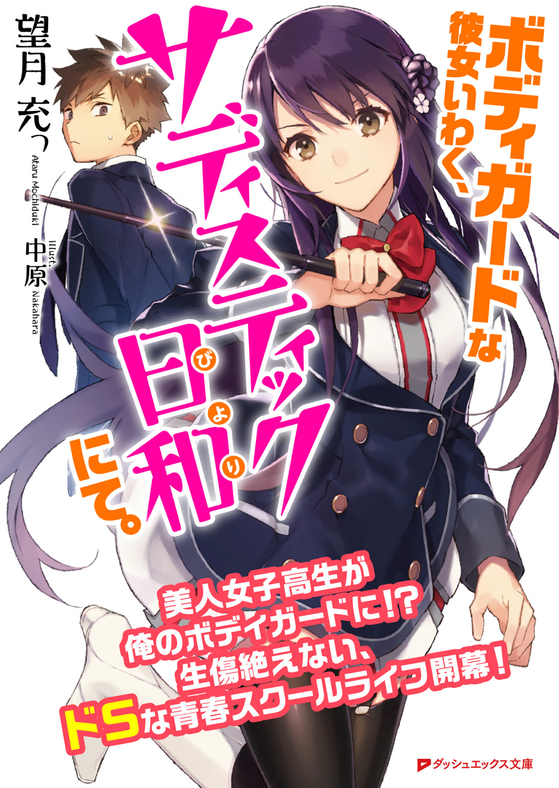

| Dパンフ 新人賞特別号【これが女子（ヒロイン）の究極系！ 極女（ごくじょ）創刊号】 | |
| Unknown | |
 ダッシュエックス文庫DIGITAL
ダッシュエックス文庫DIGITAL
呪術法律家 ミカヤ
大桑康博
序章
赤い絨毯の上に、男が立っている。
間もなく殺される運命線上を歩んでおり、そして大抵の殺される男と同様にそのことに全く気がついていない。
サラサンテは大学での講義という退屈な仕事をした後で、また退屈な男と会わねばならない己の身を嘆いていた。
サラサンテは広間の隅に置かれた、ミスリル銀製の箱を見る。
魔道具ギルド製品であることを示す、二頭の虎が絡み合う装飾がされた直方体の大きな銀色の箱は今にも天井に頭がつきそうな高さであり、触れると冬の水のように冷えきっている。
〝精霊殺しの箱〟ですよ、とこれを取り付けた業者は言った。ミスリル銀製の優れものだ！ あんたは運がいいね、この月だけ二割引きだ。
人が五人入るのに十分な大きさで、いかにも頑丈そうだ。矢でも石弓でも火炎の鳥でも持ってこい。分厚いミスリル銀の壁の前に立つ。
仕事柄、サラサンテは身の危険を感じることが多い。冤罪被害の会だとか、元受刑者の人権を守るだとか、そういうことをしているので、罪人と接することが多いし、恨みを買うこともある。
〝精霊殺しの箱〟。ミスリル銀の防護壁だ。万一の時のための避難所として、貴族の間で流行している。
広間の隅の一角に置かれた大型のミスリル銀の箱は、私が中に入ると自動的に扉が閉められる仕組みになっている。なんせ、十五式以下の呪術であれば全部弾いてくれるというのだから、まさに精霊殺しだ。最も私の古い友達には、こいつを壊せそうな奴がいるのだが......。
こいつに頼ることになるのだろうか。さもありなん。人間、一皮剝けばただの獣だ。これからくる客人がどういう態度に出るかなど、運命神にもわからんさ。
扉がノックされた。
「旦那様、カヴァ茶を二つでよろしかったですね？」
使用人のラッテンバーグが、皿の上にカラダン玉を使った高価な器を載せて入ってきた。温かいカヴァ茶から湯気が立ち、彼女の顔にもやをかけている。
「ああ、そこに置いておいてくれ」
「はい」
「それとラッテンバーグさん、これからこの部屋には入らないようにな。出迎えはいいから、台所で掃除でもしていてくれ」
ラッテンバーグはにこりと笑い、お辞儀をした。
「はい、失礼します」
こう言っておけば、ラッテンバーグにも、客人が誰かはわからないだろう。これからやることは、できれば内密に済ませたいことだ。なんせ、相手の面子を粉々に潰そうとしているのだから。
これが、ラッテンバーグとの最後の会話になるとわかっていれば、あるいはもう少し温かい言葉を彼女にかけていただろうか、と死ぬ間際にサラサンテは考えることになる。「死を思いながら生きれば、それは良い人生になるだろう」とは千年前の文豪の書いた一節だが、なかなか実践するのは難しいことだ。
また、男は死ぬ間際にこうも考えることになる。「俺は今の今まで、罪を犯した者の更生を仕事にしてきたが、果たして『殺される側の気持ち』をちゃんと考えてきたと言えるのだろうか？」と。
また、扉がノックされた。
「入るぞ、サリー」
男の声がした。自分のことを面と向かって「サリー」と呼ぶ者は、この町でもそう多くはない。学生時代につけられたのだが、はっきり言って嫌いなあだ名だし、その名で呼ぶなと友人たちにも言っている。
「ああ、入れ」
サラサンテはそう答えた。
時刻は午後三時だった。
旧友との再会を懐かしむ、他愛ない会話が始まった。
サラサンテは相手の昔話をし、相手もサラサンテの昔話をし、お互いに笑い合ったりした。
三時半、サラサンテは殺されていた。
第一章 沙漠の炎
【精霊呪術法 第一条】
人を傷つけるために精霊を使用してはならない
１
秋の二の月の十三日。燃えるような赤い髪の先っぽにだけ、綺麗にカールがかかった娘が雑踏の中を歩いていた。
ミカヤ・サリンジャーは右胸に水瓶と剣の刺繡が施された白い呪術法衣の裾を折り曲げて、止めておいた馬車のステップに足をかけた。
さっきまで、青空が憎いかのように煙草を吸っては煙を吐き出していた御者が、「おう、来たかい。さあ、乗んな」
「ありがとうございます」
ミカヤは一礼して馬車に乗り込み、革の席に腰を下ろした。それから鞄の鍵を開けて、中の書類をもう一度、改めて読み直した。
「〝左へ細長い街〟まではゆっくり五時間ってとこだよ。まあ、眠っていなよ、お嬢さん」
「ええ、そうさせてもらいます」
「あそこは、なんもねえとこだよ。俺はこんな仕事だから、たまにあの町に行くけど......サボリマサボテンがあちこちに生えていて、棘が靴に刺さって痛てえんだ。あの町じゃ、サボリマサボテンの味噌焼きが名物で、結構うめえんだけどよ。あんな町でよく暮らしていけるもんだ」
「サボリマサボテンの味噌焼き......なんだか美味しそうね」
ミカヤは少し目を光らせ、窓の外を眺めた。今までいた、〝竜の大きなしっぽ〟の外へと馬車は進んでゆく。窓の外は原っぱがどこまでも広がっており、兎が蝶と追いかけっこをしている。
「まあ、結構旨いんだけど、それ以外なにもねえからなあ。その点、〝竜の大きなしっぽ〟は立派なもんだ。大聖堂に城に、それから王立裁判所まである。〝赤き焰の帝国〟の中じゃ立派なもんだ。それに引き換え、〝左へ細長い街〟ときたら......ああ、そうそう！ 〝左へ細長い街〟といえば、あの話を知っているかいあんた」
御者は嬉しそうに話しかけてくる。
「アイスフェルドが捕まったんだ！ 〝左へ細長い街〟で、野郎が捕まったんだ！ 世界中の大物を殺しに殺しまくったヤロウがついにだ。知っていたかい？ お嬢ちゃん」
ミカヤは書類から眼を離して頷いた。
「ええ、とてもよく知っているわ」
「なんせ号外が飛び交い、〝大陸新聞〟の売上が最高記録を更新したそうだぜ！ そいつが裁判にかけられようってんだ。おらあ、裁判だのと堅っ苦しいのは好かねえが、観に行こうかな」
「私も参加させてもらうわ」
ミカヤは「参加」という言葉を使ったが、御者は特に気にしなかった。
「俺も、以前酒で捕まったことがあってよ。ま、器物損壊だ。街灯の精霊石を壊しちまって。そんで、裁判官が偉そうに聞くんだ。あなたはその時、お酒を飲んでいましたか？ ってな」
御者はお得意の話をするように口角を上げた。精霊石とは精霊の力を込めた石のことである。
「だから、俺はこう言ってやったよ。そりゃ、俺が酔っ払ってねえ時に聞いてくれ、この酒瓶が見えねえのかってな。だあっははは！」
ミカヤは口元に手を当てていた。嬉しそうに笑っている御者だが、私の仕事を知ったらどんな顔をするだろう。
「で、その裁判にアイスフェルドがかけられるんだなあ。間違いなく釜茹でか、塩漬けの刑だろうよ。ああ......奴はさ、そりゃもちろん薄汚ねえ殺し屋だ......金目当てに何人もの人間を手にかけた。俺だって捕まってせいせいすらあ......でもよ、心のどっかでそいつが捕まったって聞いた時、なあんかガッカリしちまったんだよなあ」
「なんとなく、わかる気がするわ」
御者はミカヤの相槌に気をよくして、ハイヨーと馬の手綱を引いた。
「だよなあ！ だって、アイスフェルドだぜ!? 軍艦に乗った〝青き氷の帝国〟の海軍大将を殺したのも奴だって話だ。海軍大将も呪術の達人、海上は氷と火の上位精霊がぶつかり合って、とんでもねえ状態だったそうだ。だが、勝ったのは奴だ。しかも、驚いたことに、現場ではその大将以外は誰も死んでなかったそうだ！ 奴は暗殺の天才なんだ！ 吟遊詩人は奴についてこう歌う......『アイスフェルドは燃やすだろう。敵も味方も、人の想いも』ってな」
「ええ、しかもただの天才じゃなく、それを支える精神力も持っている」
ミカヤはそう話した。
「火の精霊呪術の初歩修練に、〝永遠の蒸発〟というのがあるの。暗い部屋の中、上から垂れ落ちてくる水を、火の精霊を宿した掌で受け止めて蒸発させ続けるというものよ。普通は一時間で音を上げるんだけど、アイスフェルドはこれを一週間ぶっ続けでできるそうよ。飲まず食わずのままでね。奴を鍛え上げたというさる高名な大魔導師の話によればね」
「奴はバケモノだ！ 最強の呪術師だ！」
御者は嬉しそうだ。
「それだけじゃない、アイスフェルドは〝暗殺者〟としての腕も超一流。各国の将軍、政治家、財閥関係者を手にかけてきた。奴はこの大陸が生みだした最悪の殺し屋だわ」
「......あんた、えらく詳しいんだな」
御者は驚いたように後ろを振り返った。ガラス窓越しに見えるのは、まだ十代であろう若い娘だ。あどけなさが残る中にも確かな意思を内包した鋭い相貌。そして来ている白装束の胸には、「許し」と「裁き」を象徴する、水瓶と剣の刺繡......。
「あ、あんた法律家？ 弁護士なのか？」
「ええ、そうです。一つ付け加えると、普通の法律家ではなく、〝呪術法律家〟です」
「な......な......」
「この秋に、目出度く呪術司法試験に合格したの。新米弁護士のミカヤ・サリンジャーです。何か困ったことがあったら、相談に乗るから」
御者はそこで急ブレーキをかけた。ミカヤは前につんのめって、鼻を打ってしまった。それでなくても昔から、思い立ったらすぐ突っ込んでいく性格のミカヤは鼻を打つことが多い。
「まさか、アイスフェルドの裁判を......」
「ええ、そのまさかよ。これから、私がアイスフェルドを護送しに行くの」
ミカヤは痛そうに鼻を手で押さえていた。
「じょ、冗談じゃねえ！ そ、そんな奴、おらあごめんだ！ 金はもういいから、ここで降りてくれ！」
ミカヤは笑いだしそうになってしまった。
「ああ、その心配は大丈夫。こんな善良な御者さんの馬車で、暗殺者アイスフェルドを移送したりしないわ。もちろん、奴は何人もの兵士に監視されながら、護送車で移送するのよ。御者さんは、〝左へ細長い街〟に着いたら帰ってくれていいから」
「ほ、本当だな......？」
「私は法律家でテラミス神官。たとえ法廷でなくとも噓は言わない」
御者はほっとしながらまた手綱を引いて馬を走らせ、そして思い出していた。
大法廷があることで有名な〝竜の大きなしっぽ〟（螺旋状の形の町並みからそう名付けられた）で、史上最年少で呪術法律家の資格を取った十七歳の少女がいるという噂のことを。
馬車はぽっかぽっかと平穏な蹄の音を響かせながら、乾いた風の吹く沙漠の道を走っていた。馬車の全長の倍ほどもあるサバクオオトカゲが一匹、のそのそと歩いている。
ミカヤは書類に目を走らせながら、水筒の蓋を開け、二口飲んだ。
「敵も味方もか......私のことは燃やさないでくれるかしらね」
赤い唇が適度に濡れた。
２
左へ細長い街。
正面の高い門と、そしてその後ろに広がる光景を見れば、〝赤き焰の帝国〟の隅っこにある町に、何故こんな一風変わった名前が付けられたのか、すぐにわかる。
くたびれた柱が二本並んだ正門の先は、町並みが左へ左へとずっと続いていく。正門の右側、つまり大陸の地図での西側には、大きな湖が陣取っており、ポンプが時折動いて湖底から水を汲み上げている。
ミカヤは、子供がサボリマサボテンをつついて遊んでいるのを視界に収めながら歩き、ヤムス神官市立警察署まで行った。
中の大陸では、主に八の神が信仰されている。
太陽神ホルストがその筆頭であり、神たちの長老とされている。
今、ミカヤが来ているのは秩序の神ヤムスを信仰する者が集うヤムス神官警察署である。
この大陸で、警察官の職に就こうとする者は、みなヤムスを信仰するのだ。
いかめしい護送車が置かれている。護送車は全体的にごつごつとした金具が施されていて、鉄製の槍がクロスして車の腹の部分にかけられている。
鉄製の槍をクロスさせるのは秩序の神ヤムスを象徴する行為であり、警察署にはよくこれが飾られている。
入り口に二人の衛兵が〝赤き焰の帝国〟を象徴する大きな竜の紋章の盾を構えて馬に乗っている。これに比べればさっきまで乗ってきた馬車など、草原で気ままに遊んでいる小鹿みたいなものだ。
ミカヤは衛兵に会釈し、呪術法律家である旨を告げてから、中に入った。
職員らが物珍しげにこっちを見てざわめく。
「おい、誰かあの迷子に声をかけてやれよ」「違う、弁護士じゃねえか。アイスフェルドの！」「あんな小娘がか？ まだガキじゃねえか」
それらを無視し、一番偉そうにしているスキンヘッドのヤムス神官に声をかける。男は遅めの昼食なのか、立ったまま肉の挟まったパンをほおばっている。
「ここの署長ですか？」
「ああ......まさか」
もぐもぐと肉入りパンを喉の奥へと放りこむ。
「そのまさかです。ミカヤ・サリンジャー。テラミス神官で呪術法律家です。暗殺者、アイスフェルドの面会と護送に来ました」
テラミスは正義の神であり、法律家から信仰されている。
「おめえが......？ まったく昨夜から、世の中狂ってやがる。大陸最凶の暗殺者の一人を捕まえたら、女の尻追い回しているのがお似合いなくらいのガキ。しかも、そいつを弁護するのも赤毛のガキだ。これじゃあ、俺の仕事も近所のガキに代わってもらおうかってんだ」
言葉はきついが、棘のある言い方ではなかった。どちらかと言うと、この状況を面白がっているようである。
「護送する前に、容疑者に二、三質問がしたいんです。お時間は取らせませんから」
「......何を聞きてえんだ？ もう取り調べはやっているし、調書も作った」
警官は仏頂面で五枚の紙きれを差し出す。そこには、かなり念入りに調べた痕跡が確かにあった。
「そのようですね。でも、私たち弁護士は、まず被告人との『繫がり』を大切にすることから、仕事に入ります」
「......処刑確定の殺人鬼とか？」
「処刑確定だからこそ、今しっかり話を聞いてあげたいんです。後悔の思い、償いの気持ちはあるのかどうか、きちんと聞いておきたい。それが私の弁護士としてのポリシーです」
青二才だと思われるかしら、と内心不安に思うが、本心を直接伝えるのが私の生き方だ。
すると、さっきまで不審げに見ていた男が、にやりと笑った。
「ヤムス神官のヤンだ。ここの巡査長をやっている。昨夜からわけのわからん客ばかりで参っていたところだが、あんたチビだが気骨がありそうだな」
「どうも、ヤンさん」
「こっちだ、ミカヤ。ついてきな、それと......」
ヤンは歩きだし、振り返らずに言った。
「赤毛とか言って悪かったな......忘れてくれ」
この街では、何故か赤毛の女性は軽んじられる。生真面目に勉強をしていたミカヤにも、「そこの赤毛！ 遊んでばかりいるんじゃない！」と怒鳴ってくる教師がいたのだ。
「いいんですよ、慣れっこです」
ヤンは、肉入りパンを鞄の中に放りこんで、署内を歩いて行く。
この警官はいい人だ、とミカヤは思った。十七歳なのに呪術法律家なんて仕事についている。舐められて当たり前だ。でも、ヤンは多少なりとも〝認めて〟くれたようだ。ヤンについて階段を下りると、そこは留置所だ。
暗く湿った空気の留置所には、鉄格子の部屋が六つある。本当に簡素な留置所で、中にいるのは窃盗や傷害で逮捕された者が数人。
（......大陸最高の暗殺者を収容しているとは、とても思えない......）
革靴の踵が、鉄製の床をコツコツと響かせる。〝竜の大きなしっぽ〟の留置所だったら、〝物資強化〟の呪術をかけた樫の木の床で囚人の脱走を防ぐところだけど、ここは予算がないらしい。
恐らく、誰が見ても一目でわかっただろう。
そこに、彼はいた。その男の周囲だけが、黒く深く沈んでいるかのような異様な気配に包まれていながら、しかし涼やかな顔で足を投げ出して座っている。着ている黒衣は死の精霊を連想させ、右の耳たぶにだけイヤリングをつけている。
その姿の中で、一番目を惹くのは、左手だけに嵌めている濃い茶色の革手袋。
背はかなり高い。ミカヤより、頭一つ分は大きい。
その男は、ミカヤの姿を見ると、薄く笑った。
「......まだ子供なのに、あんた何やったんだ？ 喧嘩か家出か？」
ミカヤは嘆息した。ただでさえ子供っぽい容姿の私は、この先仕事のたびにこういう対応を受けるんだろうか。
「いいえ、この法衣を見てもわからない？ あなた、一応は暗殺のプロなんでしょ？」
こちらからも反撃を加えてやらないと、舐められたままで終わってしまう。
男はさらに唇の端を上げた。
「ああ、一応プロだ。しかし、あんたみてえに中等学校を出立てみたいのが、その大層な法衣を着ているのは初めて見るんでな。あんた、パン屋の奉公人の割烹着と間違えて着ているんじゃなかろうな？ そいつは、法律のプロしか着ちゃいけねえことになってるはずだぞ」
すると、隣にいたヤンが怒鳴った。
「アイスフェルド！ たわごとを言うと、鞭を食らわせるぞ！」
ヤンが警棒で思い切り鉄格子をぶん殴った。けたたましく鉄格子が鳴り響き、いかついヤンは警棒を構えて仁王立ちする。
しかし、ミカヤはそれを手で制した。
「ごめん、ヤンさん。ここは、私に任せてくれる？ 二人だけで話がしたいの」
ヤンがかばってくれるのは有り難いが、この場は私が一人で請け負いたい。
「そいつが何十人殺してきたか知っているのか？ お前さんなんか、蛇が兎を一飲みにするようなもんだ。飲みこんだ後で、げっぷすらしねえだろうな、そいつは」
ヤンは驚いたように、くるりとこっちへ向き直った。
「大丈夫。奴はミスリル銀の手錠をかけられている......得意の呪術は使えない。それに、私だって精霊呪術は一通り使えるのよ」
「本当かよ......」
「本当よ。そうでなきゃ、呪術法律家なんて務まらない。何かあったら呼ぶから」
そんなら好きにしろと言い残し、スキンヘッドの警官ヤンは歩き去っていった。私を信用してくれたというよりは、単に忙しいのだろう。
ミカヤは鉄格子の中で悠然と座っている男に、もう一度目を向ける。
静かな......途方もなく静かな気配。目を凝らしているのに、たまにそこにいないような錯覚に陥るほどだ。
「改めて。私はミカヤ・サリンジャー、貴方の弁護を担当する者よ。暗殺者のアイスフェルドさん」
男、アイスフェルドはにやりと笑った。
「赤毛の女。俺に弁護なんて必要ないんで、帰ってもらえるかな」
「そうはいかない。どんな凶悪犯でも、弁護士はつけなければいけないの。貴方が、たとえ十人傷つけていようが、二十人殺していようがね」
「ううん......どう言ったらあんたに伝わるのかわからないが、弁護士なんて必要ねえんだ。俺にはな」
アイスフェルドは「困ったなあ」という表情をしたので、それがなんだか愛嬌があるようにミカヤには感じられた。よくよく見ると、アイスフェルドはあどけない顔で、まだ子供のようだ。歳は推定十八と調書に書かれていたが、もっと幼い雰囲気だ。
「ここは、寒くて腹が減るな。メシを食ってもいいか？」
ええどうぞ、と言おうとしたミカヤの口が、驚愕に開いてしまった。アイスフェルドは誰かがかじった後の肉入りパンを手に持っていたのだ。いかにも旨そうなそれを、がぶりとかじって微笑みかける。
「それは!?」
「あのおっさんから、貰ったんだよ。ついさっきな」
ミカヤは生まれて初めて体験する恐怖に戦慄していた。この男は、いつ何時、誰からでも物をくすねることができるのだ。その気になれば、手錠と鉄格子の鍵でさえ。いや、その気になれば私の命でさえ......。
「どうした、震えているぜ赤毛の娘。肉入りパンでも食うかい？」
「......貴方ねえ......」
駄目だ、主導権が向こうに移っている。何より、指先が震えてしまっていて、これでは対抗もできない。
ミカヤは両手でバシンと自分の顔を叩いた。頰が赤くなるくらいに、思いっきり。ジンジンする顔を向け、アイスフェルドを視界に収める。相変わらずの悠然とした微笑。ミカヤは鞄から調書を取り出し、中に書きこみを始めた。
「......おい、赤毛の女？ 何を書いているんだ？」
「貴方の罪に、窃盗罪を付け加えているの。目の前でやったことだし、私が証人になるわ」
「あんだと？」
その途端、アイスフェルドがあどけない顔をわずかに綻ばせた。
「今更、窃盗なんぞ付け加えたからって、状況が変わるのか？」
「いいえ、どの道処刑に決まりよ。でも、やったことはやったこと。法律家として見過ごすわけにはいかないの」
落ち着いて自分の役割を果たすこと。相手はミスリル銀製の腕輪をつけられて、呪術なんか使えやしないんだ。さっきのだって、ただのスリの技に過ぎない。
「プ......くくく」
アイスフェルドはおかしそうに笑い始めた。顔が揺れるのに従って、右側にだけつけた真珠のイヤリングが上下に揺れる。
これでいい、主導権はあくまで私よ。
「何がおかしいの、アイスフェルド？」
「お前さんみたいに石頭の女を一人知っていてな......。そうか、窃盗罪か。そりゃ確かに認めないといけねえよなあ」
「そう、何者も正義の神テラミスの前には噓をつけない......。そして貴方は今までに少なくとも十人は殺してきているはず......。この町の大学教授、サラサンテ氏もあなたが殺したのよ。その罪を認め、素直に謝罪をするならば、〝釜茹での刑〟だけは避けられるかも。釜茹での刑は、衆人の前で煮たった湯の中に放りこまれる、残酷な拷問刑よ」
ミカヤの言葉に、アイスフェルドは動じた様子もない。
「どう？ この刑を免れたいのなら、法廷で素直に謝罪しなさい」
「それはできねえなあ」
アイスフェルドはあくまでも悠然としたポーズを崩さない。
「まず、最初に言っておくと、俺が殺したのは十人じゃなくて、九十九人だ」
「......なんですってえ？」
ミカヤは間の抜けた声を出してしまった。
「殺しの数は力量の数値化だ。正確に言っておかないとよ」
「あ、あなたねえ！」
「それと、サリーのおっさんを殺したのは、俺じゃない。やってもいない罪を白状する気にはなれんよ」
「......あなたのことを買いかぶっていたようね」
ミカヤは心底がっかりしたような声を出した。
「挑発的な言動ばかりとるのは、まだ子供だから仕方ないと思っていた。けど、まさかこんなに頭の悪い男だとは思ってもいなかった」
「子供なのは、あんたも一緒じゃねえか」
アイスフェルドは、いかにもおかしそうに言った。
「......九十九人もの人を殺めておきながら、サラサンテ氏だけは殺していないって？ 七邪神戦争で〝焰の王〟は古都スランザールを焼き滅ぼしましたが、その隣にあるフェルムの大木は焼いてはいませんって？ そんな脳みそが茹であがったような冗談が通じるほど、甘い世界じゃないのよ」
焰の王とは、この世界で最強の精霊とも呼ばれる存在であり、大昔に起きた七邪神戦争の折には、いくつもの国を滅ぼしたと言い伝えられている。しかし、現在では〝灼熱の氷壁〟と呼ばれる巨大な氷の山の中に閉じ込められているのだ。
「あいにくだが、自分のことで噓をつくのは嫌いなんだ。あんたのような法律を少しかじっただけの小娘にコケにされるのもな」
「......」
「ま、どっちにしろ、お前にゃ関係ねえ話だな。弁護なんて必要ねえし、とっとと帰ってくれるか？ ここまで来て手ぶらで帰すのもなんだし、肉入りパンをやるからよ。ほらよ」
アイスフェルドはもう残り一口となった肉入りパンを、放り投げてよこし、ミカヤはそれを片手で受け止める。旨そうな鶏肉に、がっしりとした歯で嚙み切った痕がある。ミカヤは「むうう」と唸ってから、がばりと大きく口を開けて一気にそれを嚙み砕いた。肉の旨みに胡椒が程よく効いていて、歯ごたえ十分の味。
アイスフェルドの瞳が「なんだこいつ」と言っていた。
「とても旨かったわ、ありがとう。お礼は法廷でさせてもらうから」
アイスフェルドはまた、笑い始めた。その黒い瞳は、星が一つだけ浮かんだ夜空のように、静かに光を放っている。
笑うと意外に愛嬌あるじゃない、こいつ。それに彼は「なんだと？」というのを「あんだと？」と言う癖があるらしい。昔、学校で同じクラスにいた不良少年もそうだった。
ミカヤの後ろの扉が開いた。さっきの警官が部下を何人も連れて入ってきた。
「おい、お嬢ちゃん。もういいか？ そろそろ時間だよ」
ヤンと共に剣と鎧で武装した男が五人、アイスフェルドの入っている鉄格子の前に立つ。
「アイスフェルド、後ろの壁に手をつけ！ 一歩でも動けば、槍で串刺しだぞ」
「無茶を言うな、おっさん。一歩も動かずにどうやって壁に手をつけというんだ？」
「......ええい、黙って言う通りにしろ！」
ヤンや警官たちの表情に緊張が走る。無理もないとミカヤは思った。この〝左へ細長い街〟は人口五百人の小さな街。今までにこんな大物の犯罪者、扱ったことなんか一度もないのだろう。おまけにアイスフェルドは、人を馬鹿にしたような態度をとってばかり......。アイスフェルドが壁に手をつくと、二等警官二人がかりで刺又で取り押さえてから、腰縄をつけるほどの念の入れようだ。
とりあえずアイスフェルドがくすねた肉入りパンのことは黙っておこうと心に決めた。ともかく、街までこいつを連行するのが仕事だ。危険な男だが、頑丈な護送車で騎兵に守られながら行くのだから大丈夫だろう。
勝負は、法廷から始まるのだ。
３
ミカヤは護送車の中で、腰に丈夫な縄をつけられたアイスフェルドと向かい合わせで座った。二頭の馬に牽かれる護送車には、さらに二人の騎兵が警護についてきてくれるという。
黒衣の男はどこまでも涼やかで、これから間違いなく処刑される人間の態度とも思えぬ悠然とした面持ちで静かに目を閉じている。
ミカヤは馬車が発進するまでの間に、調書を読むことにした。
ヤンが丁寧に書いた調書を一枚一枚丁寧にめくる。
「容疑者 ローランド・アイスフェルド 年齢 18（推定） 生年月日不詳
秋の二の月、十二日、午後三時四十分。人権活動家であり大学教授のサラサンテ・ニコラ（50）が〝左へ細長い街〟の自宅で、〝精霊殺しの箱〟の中で死亡しているのを使用人のラッテンバーグ（38）が発見した。死亡推定時刻は午後三時三十分。遺体には少量の吐血はあったが、今のところ死因は不明、検死結果を待つ。ラッテンバーグは私、巡査長のヤンを呼び、「怪しい客人と話していた旦那様が、部屋から出てこない。怖いので一緒に開けてほしい」と言った。共に〝精霊殺しの箱〟を開けると、サラサンテの遺体があった。
第一級殺人事件と見なし、捜査を開始。尚、被害者が中で倒れていたとされる〝精霊殺しの箱〟は、警官が現場検証を行っている際に、魔道具ギルドによって回収されてしまった（相変わらずの強引なやり方であった）。
聞き込みにより、黒衣の長身の男が〝左へ細長い街〟に潜伏しているとの情報を受ける。伝説の暗殺者ローランド・アイスフェルドのような身なりだったと街の人々が話していた。アイスフェルドはサラサンテの別宅にて眠っているところを、午後四時に巡査長ヤンとその他三名により捕獲される。武力抵抗はなし。逆にアイスフェルドは巡査長ヤンに対して、サラサンテ氏の死んだ時の状態を詳しく聞いてくる。アイスフェルドは、暗殺者であることを認めるも、三回の尋問で容疑を全て否定している。尚、何故アイスフェルドが〝左へ細長い街〟に滞在していたかについては......」
調書を読んでいる内に、ミカヤには疑念が生まれた。何故、アイスフェルドは容疑を否認しているのに逮捕の際に抵抗しなかったのだろうか。伝え聞くアイスフェルドの逸話が、実力の半分でも示しているなら、こんな田舎町の巡査の一人や二人、片づけるのは造作もないはずだが。いや、まさかとは思うが、彼は本当にローランド・アイスフェルドなのだろうか？ 見た目も幼いし、言動もそこらの不良少年にしか見えない。時折見せる雰囲気や佇まいは、尋常の男のそれではないが、本当にこんな子供が？ それに、捜査本部にこいつが潜伏していると教えたのは一体......。
ヤンの大きな声が聞こえてくる。
「セト。何かあれば、多少痛めつけても構わん。相手が生まれつきの殺し屋だってことを忘れるな」
「はっ！」
外で野太い声がする。
護送車の扉を開けて、大柄な警官が一人入ってきた。顔は日焼けして浅黒いが、青いマントも初々しく、まだ二十歳そこそこだろう。
「アイスフェルドの護送を務めるセトであります。ミカヤさん、何なりと申しつけてください」
「ええ、ありがとうございますセトさん」
ミカヤは、にこりと微笑んだ。昔、母さんから「あんたの笑顔なら少々悪いことしてもテラミス神様は許してくれるよ」と言われた笑顔だ。
「はっ、この〝ハイエナのセト〟が全力で護衛します！」
セトは右拳で胸を強く叩く。これはこの大陸の警官の「敬礼」だ。
護送車はゆっくりと進みだし、ゆるやかに走り始めた。
「ええ......でも、〝ハイエナ〟だなんて、なんだかセトさんには似合わない異名ですね」
セトは気立ての良さそうな男らしい顔つきで、見るからに誠実そうだ。この大陸の戦士や術師は、名前の前に異名をつけることがある。しかし、こうした場合に「ハイエナ」を持ってくるのは珍しいし、何よりセトには似合わない。
「よくぞ言ってくれました。確かにハイエナはよく誤解されがちですが、決して他人の餌を横取りするだけの動物ではないのです」
「なるほど」
「むしろ、集団で統一された動きをするし、仲間の面倒もよく見る立派な動物であります！ 本官はハイエナが周囲から受けている誤解を解くために、自らこの異名をつけたのです」

ミカヤの顔が自然と綻んでいた。
「立派な心がけですね。きっと神々も祝福されるでしょう」
周囲からの誤解を解くためだけにこんなことをするなんて、なかなかできることじゃない。
「お前、馬鹿だろ」
一気に冷や水を浴びせるのは、アイスフェルドだ。
「アイスフェルド！ なんてことを言うの？」
「馬鹿だと思ったから、そう言っただけだぜ。あ～あ、この街の警官ときたら、鞄からパンを盗んでも気がつかねえのや、動物愛護家みたいなくだらねえのばかり。おまけに赤毛の頑固娘ときた。これから向かう大法廷にゃ、もうちっと面白いのがいることを期待するぜ。このままじゃ、退屈しのぎもできねえ」
「......その期待には、もうすぐ応えられるでしょう。大法廷の呪術裁判官は、貴方のやった罪を全部丸裸にしてしまうからね」
「へえ、そうかい」
「......ねえ、アイスフェルド。まだ、罪を認める気にはならない？」
ミカヤは慎重に言葉を選ぶように言った。
「貴方がやってきたことは許されないし、私も許す気はない。暗殺者なんて、最低よ。でも同時に、貴方がどれだけ凄い呪術師なのかは、知っているつもりよ。あなたはかつて、焰の王を呼び出すことにも成功したとか......。本当だとしたら、信じられない業だわ。それだけの呪術の達人、釜茹でにするのは酷だと思う」
「そりゃどうも」
「私がこんな弁護を引き受ける気になったのは......もちろん他の弁護士が全員断ったから、私のところに来たんだけど......それだけじゃない。たとえ邪道に逸れたとしても、道を極めた人間には、それにふさわしい死に様を選ぶ権利があると思ったから......私だって呪術師の端くれ。あなたの凄さはわかる......。そう思ったから、引き受けようと決めたのよ。私、なんでもすぐ決めるからさ。もし、あなたが素直に罪を認めるなら、『死の精霊の一撫で』の刑で安楽に死なせてあげることもできる」
アイスフェルドは眉を片方だけ上げてみせた。
「そりゃ、ありがてえな。今の台詞、歯磨き粉を洗面台に吐きだす時に、思い出すことにするよ」
「あなたねえ......！」
「弁護はいらんと言ったはずだ。何度も言わせるな、バカ女」
「ば......バカ女ですってえ？」
そんなこと、物心ついてから一度も言われたことがない。
「さっきもわかったはずだぜ。俺は、逃げようと思えばいつでも逃げられるんだ。例えばだな......おい、そこのハイエナのセト」
アイスフェルドはきょとんとしているセトに話しかけた。右手の人差し指を器用にくるくると動かし、いかにも何かの呪術の印を結ぶかのような仕草をした。
「今、お前に〝六十秒の死〟の呪術をかけたぞ」
「えっ!?」
セトはびくんと大きな体を跳ねさせ、浅黒い額から汗を流し始めた。
「解かねば、一分以内にお前はあの世に行くぞ。こいつは特別強力な呪術で、俺でなければ解けない」
「そ、そんな......」
「解いてほしいか？ そんなら、俺のこの手についた手錠を外してもらわないとどうしようもないなあ」
セトは脂汗を流し、慌てふためいている。
「おい、手錠の鍵は持っているんだろう？ なら、さっさとしてくれよ。ほら、これだ」
アイスフェルドは手錠をセトの前に掲げてみせる。うろたえるセトを、しかしミカヤがぴしゃりと片手で制した。
「その必要は、ないわ」
ミカヤはゆっくりと諭すように言った。
「一分以内に死ぬ呪術ですって？ そんなもの聞いたこともないわ。それに、今アイスフェルドの手にかけられているミスリル銀の手錠。精霊たちはミスリル銀が大嫌いで、これをつけられた呪術士は術を使えないの。よって、セトさんに呪術はかけられていないわ」
ミカヤの説明の後、ぱちぱち、とわざとらしい拍手を送るのはアイスフェルドであった。
「なかなかの弁舌だな。その歳で呪術法律家の資格を取っているだけはある」
「あなたにはがっかりしているところよ......！ そんな陳腐な噓で騙して逃げようだなんて、『大陸最高の暗殺者』の名が聞いて呆れるわね」
「おい、でかいの。雨上がりの路上の犬みてえに冷や汗かいてるじゃねえか。今のは冗談だよ。本気にする奴がいるとは、俺も思っていなかったんだが......」
黒衣の男の言葉に、セトは赤面してうつむいてしまった。
「......セトさんをいじめるのはよしてちょうだい。まったく、もう......。あなた、これから処刑されるのよ？ わかっているの？」
「いや、処刑も釜茹でにもされないね。理由は一つ。これは完全な冤罪だからだ」
ミカヤはアイスフェルドの瞳をしっかりと正面から見た。......星が美しく見える夜空のような黒い瞳が、相変わらず静かな光を放っている。しかし、そこには確かに、〝何か〟があった。
ミカヤが人生の破滅を覚悟した時、最愛の人が最後に放った光と酷似しているようにも思えたが、すぐにその考えを振り払った。馬鹿馬鹿しい......こんな男の目を父に重ねるだなんて。
「ま、俺のことよりあんたのことはどうだ？ リスのしっぽみてえな巻き髪の女よ。お前さんの話を聞かせてくれよ」
「......べつに、話すことなんかない。私はただの仕事としてあなたと......」
「どうかな。こんな敗戦濃厚の裁判を引き受けるのにゃ、それなりのわけがありそうだ」
アイスフェルドはそこで、顔の横に掌をかざし、念力を送るような仕草をしてみせた。
「......ううむ、読めたぞ。あんたの事情が」
何をくだらないことを、と思いながらもミカヤの胸の鼓動は自然と速くなっていた。
「あんた......昔、誰か大事な人を失っているみたいだな」
ミカヤの心臓が十センチも跳ね上がった。
「な......」
「恐らく、法曹界の者のようだ。そして、後悔の念を元にあんたは猛勉強をし、その若さで呪術法律家になった、と。どうだ？ その様子じゃ、当たっているようだな」
「ど、どうして!?」
「〝読心〟の呪術をかけたのさ。あんたの心は、初めて想い人ができた少女のように丸裸だぜ」
ミカヤはがばっと自分の体を両手で覆い隠した。
ぷ......くくくく、とアイスフェルドが突如噴き出し、やがて腹を抱えて爆笑し始めた。
「......？」
ミカヤはわけもわからずアイスフェルドの笑い声を聞いていた。そこで、再び、彼がかけられている手錠の存在に気がついた。
「あんたねえ......！ 本当の本当に......！」
ミカヤは頰を真っ赤に染めて、細い人差し指を男に突きつけた。
「あっははは。冗談だって。あんたまで本気にするたあ思わなかった。俺ってば、演技の才能まであるのかな」
「......じゃあ、どうしてなの？」
「カマかけだよ。俺はあんたみてえな、『不幸な過去』を持っている奴らばかり相手してきたんで、そういう奴はちょいと目を見ればわかる。あんたの地位と年齢から当てずっぽうの勘で言ってみただけだ」
今度はミカヤが赤面して歯を嚙みしめる番だった。まんまと引っかかってしまった自分が恥ずかしい。さっきのセトと同じやり方で引っかけられてしまうとは......。しかし、まさか当てずっぽうの勘だけで、あそこまで......。
「あんたなんて、釜茹でにでもされてしまえばいいのよ......！」
「拗ねるなよ。引っかかったあんたが悪いんじゃないのか？」
「そういうのを、強盗の理屈と言うのよ」
「殺し屋に言う台詞じゃねえな」
アイスフェルドはとことん口の減らぬ男で、砂粒を一粒投げつければ、沙漠の中でも最も巨大なサバクオオトカゲを投げ返してくるようだ。
「おい、アイスフェルド。あまりおかしなことをすると、罪が増えるだけだぞ」
と、セトが言うも、
「殺人罪で捕まえておいて、今更何の罪だ？ 赤毛娘からかい罪か？」
アイスフェルドはどこ吹く風である。
ミカヤは学生時代に同じクラスにいた不良少年のことを思い出していた。不良と言っても、煙草をやったり喧嘩をしたりする程度だったのだが、もちろんミカヤはそんなことは許さない。彼を更生させるために注意したり、進路相談に乗ったり。だが、ある日友人のメイから『ねえ、ミカヤ、わからないの？ あの子、あなたの気を引きたくてあんなことやっているのよ？』と言われてしまい、以後なんとなく恥ずかしくなって注意するのを止めてしまった。その少年は、今では大工の見習いをしており、たまに会うと、「親方からしょっちゅう叱られるんだ」と嬉しそうに話してくれる。
（でも、こいつの場合は......そんな可愛いものじゃない）
一度でも気を抜けばいつ出し抜かれるかわかったものじゃない。
「......おい赤毛女、風の気配が妙だと思わないか？」
アイスフェルドは手錠をかけられた手を、片耳に当てる。
「風？」
また騙そうとしているのか、とミカヤは身構えた。しかし、アイスフェルドの視線の先は護送車の窓の外。熱に当てられて揺らぐ地平線だけが見える、一面の沙漠。
「ああ......こいつは、一山ありそうだな。風が妙に静かだ......沙漠の風ってのは、砂が混ざり、もっとごうごうと唸るものだが、今日の風は妙に鋭い。こういう日には、出ることがあるんだよな」
「馬鹿馬鹿しい......さっきの後で、そんなのに引っかかるとでも？」
「この風切り音......ううん、ちとマズイなあ。おい、赤毛」
アイスフェルドは手招きしている。
「ミカヤよ。いい加減、名前を覚えてちょうだい。本当にガッカリね！」
「あんでえ？」
「ローランド・アイスフェルドが、まさか赤毛の女性を見くびるような男だとは思わなかった！」
アイスフェルドは怪訝な顔をした。
「赤毛のことを言われるのは慣れっこよ。母さんも子供の頃は言われたって。けど、大陸最高の暗殺者様が、そんな通説を信じているだなんて......」
ミカヤは精一杯の皮肉を込めて言ったが、アイスフェルドは怪訝そうな顔のままだった。
「なに言ってんだ？ なんで赤毛だから見くびるんだ？ さっぱりわからねえ」
「へ？」
「俺はあんたの赤毛が綺麗だなと思ったんで、赤毛と呼んでいるだけだ。妙な赤毛だな。赤毛は好きだし」
「な、な......」
ミカヤは顔の火照りを隠すのに必死だった。
「そんなくだらないことでからかう気!? 公然侮辱罪、及び婚約詐欺罪で訴えてもいいのよ！」
「婚約詐欺罪......？ なに言ってんだ。赤毛だから赤毛と言っただけだろうが。この阿呆赤毛。じゃあ、赤毛っていうのも止めだ。この馬鹿娘」
「この～！」
こいつ、一体どこが大陸最高の暗殺者よ。さっきからただの子供じゃない。
「あんた、変な奴だな。いいから、こっちへ来い。運命神エルギヌスの声が聴こえる。そこにいると死ぬぞ、ってな」
また、馬鹿にしようとしているのかしら。さっきはあんなことを言ったくせに。
ミカヤはつんとそっぽを向いた。
窓の外は至って平穏そのもの、嵐の気配もなくただ砂地がどこまでも続いている。
「何も起きやしないわ。今日は砂嵐注意報も出ていない」
「だが、俺の予感が言っている。ヤバイってな」
「何をくだらないことを。見なさい、この晴天を！」
ミカヤはアイスフェルドの方を見たまま、片手で窓の外を示した。小綺麗な窓の外は、焼けつく太陽の下、砂塵の舞う一面の沙漠。その青空に、巨大な（それは鳥にしてはあまりに巨大過ぎた！）翼を閃かせる何かがあった。
ミカヤの腕が突然引っ張られて、アイスフェルドの胸元に鼻をぶつけてしまった。何をするの、と言おうとした瞬間だった。
分厚い鉄の壁で覆われた護送車のちょうど真ん中の部分が粉砕され、魔獣の大きな瞳が一瞬だけミカヤの目と合い、粉々に砕かれた護送車の破片を纏いながら、大空を飛んでいった。
「空襲！ グリフォンの空襲だ！」
セトは走る護送車の砕かれた後部から転がり落ち、砂をたっぷりと顔につけながら怒鳴り、背中に下げた弓矢を取る。
ミカヤはまだ、何が起きているのかちゃんと把握できないまま、空中でアイスフェルドの胸にしがみついていた。アイスフェルドはというと、破壊されて、二頭の馬に引きずられる残骸のようになった護送車の前部から、ミカヤを腕にしっかりと抱えながら飛んで、ふわりと重力を感じさせぬやり方で沙漠に着地した。
「立てるか？ 赤毛のお嬢さん」
ミカヤが見上げると、そこには精悍な顔立ちの短髪の男が、右側にだけつけた白いイヤリングを揺らしていた。
「た、立てるわよ」
ミカヤはじたばたと足を動かした。アイスフェルドが「ほいじゃ」と言って、放り出すように手を離したので、ミカヤは砂の上で尻もちをついてしまった。
「弓構え！ 迎撃するぞ」
セトが怒鳴りながら弓を構え、さらに他の警官たちに号令をかけた。
グリフォン......それは、獅子の体と鷹の翼を合わせ持つ沙漠の魔獣であった。
「シャアアアア！」
そいつは翼を水平に広げながら、鋭角に滑空して降りてくる。途方もなく大きい！ 体長は護送車を上回るほどだろう。そのグリフォンの口には、灼熱の火炎の球が生じている。
「グリフォンの好物は丸焼きの肉だ。お前ら、頑張らないと一分後には奴の腹の中だぞ」
アイスフェルドは、グリフォンの滑空してくる延長線上から離れた安全な場所でくつろいだように座っている。
「っ撃てえい」
セトのかけ声に合わせて、三本の矢が放たれ、その内一本はグリフォンの左の翼に突き刺さり、赤い鮮血を滲ませた。
しかし、報復が待っていた。怒り猛ったグリフォンの口からほとばしる火炎は火山から噴出する灼熱の溶岩の如し。直撃を受けた警官は、叫ぶのみであった。
「ギャアアー!!」
手の施しようがないほどの火炎に纏われ、死に向かう。さらにその火の粉が、セトの左足に燃え移ってしまった。セトは大柄な体を倒し、燃え盛る左足の苦痛に呻いていた。
「セトさん！」
ミカヤがすぐに駆け寄って、必死に砂をかける。だが、グリフォンによって燃える火炎はまるで止む気配がない。
「魔獣の炎は、水の精霊術でないと消せないんだ」
低い声がした。
「え？」
ミカヤは振り返った。
「万物は火と水より生まれいでし。お前も水の精霊くらい使えるだろ」
アイスフェルドの言葉で、ようやくミカヤは自分も精霊呪術を使えるということを思い出した。
ミカヤは着ている呪術法衣の金具の上から三つ目を手で解いた。
「三式解放......！」
これで、自分の〝容量〟が一定量まで解放された。
精霊呪術を扱う時、まずは自分の中に封じ込めていた〝体内精霊〟を解き放つ必要がある。この体内精霊を介して、他の土水火風の精霊に呼びかけるのだ。
しかし、その体内精霊の力が時として、術者が体内精霊を抑え込む力を超えることがある。これを〝容量オーバー〟といい、容量オーバーになれば、最悪飼っていたはずの体内精霊に食われてしまうこともある。
そこで、呪術法衣で体内精霊が暴れださないように抑え込んでいるのだ。今は三式までを解放した。これがミカヤの使える精霊の容量の最大限だ。
右手の人差し指を上げて、念を込めながら呪文を唱える。
「戯れのウィンディーネよ！ ......沙漠に映える美しき雫よ、灼熱の赤き血を濯げ！」
次の瞬間、ミカヤの鞄が破裂した。
キラキラと透明に光る小さな女の子の形をした精霊が、鞄に入っていた水筒から飛び出し、その体を実体化させたのだ。精霊たちは、人間の作る〝詩〟や〝唄〟が大好きだ。これを呪詩と呼び、精霊を呼び出す時には必ず詠唱せねばならない。水の精霊はふわりと踊るように宙を舞ってから、セトの足の灼熱の炎に体当たりし、鎮火した。
「そこそこ使うようだな、赤毛」
アイスフェルドの声。
セトが起き上がって、弓矢を取ろうとするのを、ミカヤは両手で押さえて制した。左足が完全に焦げてしまっている。恐らく治癒術師に頼んだとしても、もう元通りになることはないだろう。
「まだ、無理よ！ セトさん」
「ミカヤさんは逃げてくれ！ ここは、俺の場なんだ！」
セトは息を荒らげながら、片足だけで立ち上がり、剣の鞘をつっかえ棒にして弓を構える。
ミカヤは呼び出した水の精霊を巨大な水滴のようにして投げたが、しかし大空を飛び回るグリフォンには全く当たらない。
（どうすれば......どうすればいいの？）
私の敵う相手ではないことはわかる。でも、このままでは、みんな死んでしまう。
「アイスフェルド！ 貴方も手を貸して！」
ミカヤは後ろにいる黒衣の暗殺者に力の限り叫んだ。
「貴方なら倒せるでしょう!? このままじゃ、みんなが......」
しかし、アイスフェルドは淡い光を放つミスリル銀の腕輪をかざしてみせるだけだった。
「じゃあ、こいつを外せ」
黒い瞳から放たれる視線が、ミカヤを突き刺した。
「それが条件だ。外せば、呪術の一撃で葬ってやる」
「......」
「この状況、流石に笑えねえよ。このまま全員あいつの腹に収まるか、今俺の手錠を外すかだ」
ミカヤはセトが引き絞った矢を放つのを見た。
「止めろ！ そんな凶悪犯を放てば、どうなると思っているんだ!?」
セトはさらに怒鳴る。
「このハイエナのセトがやる！ あんたは隠れていてくれればいい！」
セトが撃った矢は、しかし大きくグリフォンを外れた。グリフォンは悠然と空を飛び、次の獲物を岩陰に隠れている護送車の御者に決めたようだ。音速で滑空し、護送車の御者の太い首を鉤爪で刈り取ってしまった。頭をなくした御者が、鮮血を撒き散らして倒れる。ミカヤは、体が震えるのを止めようがなかった。
セトは次の矢をつがえようとしているが、顔中から脂汗を流し、息も絶え絶えだ。もう一人いたはずの、中年の警官はさっきから小便を漏らしていないのが奇跡だというくらいにおびえきって、ただセトを見守っているだけだ。
「お前、やりたいことがあるんじゃねえのか？」
アイスフェルドが、砂丘の上に座っている。だが、その表情はいつもの相手を小馬鹿にする微笑ではなく、死線の際に立つ戦士のそれだった。
「俺にゃやりたいことがある。お前にはねえのか？」
「私......私は......」
グリフォンは次の獲物を大柄なセトに定めたようだ。口に火炎を含ませながら、上空から一直線に滑空してくる。足を怪我しているセトには避けようもないし、本人にも避けるつもりがない。刺し違えで矢を食らわせようとしているのだ。だが、ミカヤにもわかる。この賭けは失敗し、セトは殺される。その後は恐らく自分だ。
ミカヤは後ろを振り返った。
「ちゃんと......みんなを守ってあげてよ！」
にやりと笑うアイスフェルドを背に、ミカヤは駆けだしてセトの胴体を引きずり倒し、砂の上を転がる。直後に、火炎流が背後の沙漠を焼きつくす。
「よせ......」
呻くセトの腰元から、鍵の束をかっさらってアイスフェルドのもとへと走る。余裕の笑みを浮かべている黒衣の男の襟元を左手で摑んで、
「正義の神テラミスに誓ってちょうだい！ みんなを救うって」
アイスフェルドは目にも留まらぬ素早さで、ミカヤの手元から鍵を奪い取って、すぐにその中から一本を見つけ出してミスリル製の腕輪の錠を外した。淡く光るミスリル銀が、沙漠に落ちた。あまりの素早い動きに、ミカヤは声を上げる暇さえなかった。
「あいにく、祈る神なんぞ持ってねえが......」
ミカヤは自分のやったことを後悔していた。やっぱり、こんな男を信用するなんて......。
「約束は守ってやる」
アイスフェルドは少しだけ濡れた唇を動かし、眼光を鋭く上空のグリフォンへと向けた。
グリフォンは上空を我が物顔で飛び回っている。次の獲物を、偉そうに待ちかまえている黒衣の男に定めたようだ。
「十二式、解放......」
アイスフェルドは、黒衣の胸元を止めている符呪の施された金具を、ばちんと外した。
「おら、さっさと出てこい。火の鳥」
なんてぶっきらぼうな呪詩なのかしら、とミカヤは呆れていた。直後にアイスフェルドの革手袋を嵌めた左手から生みだされた、巨大な火の鳥の火の粉が前髪を焦がしてしまうのに、慌てて後ろに飛びすさった。
火の鳥！
火の精霊の最上級の位にいる業火の巨鳥。
グリフォンは上空でいななき、自分の犯した失策を呪っていた。しかし、もう後には引けぬとそのまま火炎の球をアイスフェルド目がけて吐き出した。しかしその火炎球をはるかに凌駕する熱量を持った、美しい火の鳥が音もなくアイスフェルドの手元から飛び立った。火の鳥は、ちっぽけな火炎球を丸のみにしてから、そのままグリフォンに衝突し、魔獣を消炭にしてしまった。火の鳥は悠然と空の片隅へと飛び去った。
「不味そうな焼き鳥だ」
アイスフェルドがつぶやく。ポタポタと、雫が落ちる音がした。先刻まで何もできずにいた中年の警官が、とうとう漏らしてしまったのだ。ミカヤは倒れているセトのもとへと駆け寄った。
「立てる？ セトさん......！ しっかりして」
「ミカヤさん......化物は......どうなりましたか？」
「アイスフェルドがやっつけてくれたよ。もう、大丈夫！」
セトはそこで、目を閉じて気を失ってしまった。ミカヤは、セトの黒焦げになった足を触る。ほぼ焼け焦げてしまっており、どこから手をつければいいのかもわからない。
「アイスフェルド......治癒呪術を使ってちょうだい！ このままじゃ......」
ミカヤは、はっとした。アイスフェルドの瞳が、先ほどまでとは打って変わって極めて冷酷な光を放っていたからだ。
「！」
ミカヤはすぐに、地面に落ちていたミスリル銀の腕輪を拾いに突進した。しかし、すかさずアイスフェルドが極端な前傾姿勢で肩をぶつける。そしてミカヤの頭を手で支えて、空中で器用に一回転させ地面に倒してしまった。
「いい判断だ。体が追いついてねえけどな」
「卑怯者！」
じたばたともがくミカヤを、アイスフェルドは片手で額を押さえつけるだけで制していた。
（私が馬鹿だった......）
こんな男、信用していいはずがなかったんだ。
「人殺し！ セトさんを見捨てるの!?」
「暗殺者に言う台詞じゃねえな。それに、治癒呪術は使えん。どの道、そいつは死ぬだろうよ」
「この......」
ミカヤは相手の顔を引っ搔いてやろうと両手を振り上げた。男はそれをよけようとしなかった。爪の先がアイスフェルドの顔に薄い傷をつけた。
「おい赤毛。できれば女は殺したくないんだ、少し大人しくしてくれないか？」
男の頰から滴り落ちる赤い雫が、ミカヤの額に落ちた。それは、心の臓を震えさせるような、重く低い声色であった。ミカヤはびくりとして、腕を引っこめた。アイスフェルドはそれから、ミカヤの呼び出した水の精霊を自分の支配下に置いてしまった。
術者は術式が大幅に劣る相手からは、精霊を奪い取ってしまえるのである。
アイスフェルドは水の分厚いロープでミカヤと残りの警官の手と足を縛ってしまった。
「動こうったって動けやしねえから、あがくなよ。腹が減ったらその水を飲め。希望が欲しくなったら、太陽を見ろ」
ミカヤは縛られた腕に力を込めてみたが、とんでもなく頑丈な透明のロープのようで、歯が立たない。
「お前はちょっとだけ面白かった。ちょっとだけな。もう会うこともないだろう。必要な情報も手に入れたことだし、これでおさらばさせてもらう」
「必要な......情報......？」
なんだ？ 何のことを言っているの？
ミカヤはわけもわからず悔し涙が流れそうになるのをなんとか堪えていた。こんな奴の前で、泣いてたまるか。
「んだあ？ そんなツラするなよ」
アイスフェルドは少々戸惑ったようにつぶやく。
「こんな顔にもなるよ......！ 折角......あなたのことを救ってあげようと思っていたのに！」
「......だから、頼んでねえっての。ったく、おせっかいな赤毛だな」
悔しい......こんな男にまるで抵抗もできず、名前すら覚えられないままで......。
アイスフェルドはざんざんと砂を踏んで歩いてゆく。
いつの間にか護送車を牽いていた馬が二頭、走り疲れて戻ってきていた。馬たちはグリフォンの襲撃におびえて護送車の残骸を牽いて走っていたが、しかしやがて主のもとに帰ろうと戻ってきたようだ。
アイスフェルドは馬二頭を繫ぐ革を外し、その内から丈夫そうな一頭を選んで、躍るように飛び乗った。鞍もない馬をたちまち制してしまった。
「じゃあな、赤毛。沙漠トカゲに食われないようにな」
黒衣の暗殺者は、馬をゆっくりと歩かせる。
ミカヤにはどうすることもできない。ただ、その男が去るのを見守ることしか。
「待ちなさい！ あなたは......あなたは私が守るのよ！」
なんでこんな台詞が出てきたんだろう。今拘束されているのは私で、それをやったのはあの男なのに。
ふと、黒衣の暗殺者は馬を立ち止まらせた。首を回し、顔をミカヤの方に向けている。まさか、さっきの台詞で？ そんなわけはない。しかし、男は口を開いた。
「......めえったな......まだ、しばらくあんたの世話になることになりそうだ」
肩を竦めてやれやれと首を振るアイスフェルドの背後に、青い旗を掲げた騎馬隊がやってくる。総勢百、いや三百は超えるであろう騎馬隊と呪術騎士が、槍や弓を持ち、砂埃を上げて颯爽と迫ってくる。
その中の隊長格の男が、風の精霊石で声を大きくできるメガフォンを片手に叫んだ。
「アイスフェルド！ お前がアイスフェルドだな？ なんということだ......観測士がとんでもない霊力を感知したので来てみたら、この有様だ。下級呪術士百人分くらいの呪力が、一気に解放されたと聞いたので慌てて〝竜の大きなしっぽ〟の警官を総動員して駆けつけてみれば、この狼藉か！ 観測士は、まるで『大導師アルフガルドが暴れているようだ』と言ったほどなんだ！ これをやったのは、お前だなアイスフェルド！」
男の隣では、呪術騎士が氷の精霊を脇にたずさえている。
「弓、構え！」
隊長の号令で、三百人の兵士が一斉に弓に矢をつがえた。
「その人たちを解放しろ、アイスフェルド！」
アイスフェルドは溜息をついて、右手の指をばちんと鳴らした。
ミカヤを束縛していた水の精霊が消失した。彼女は前につんのめってから、踏ん張って立ち止まり、びしょ濡れの法衣をぱんと手ではたいた。水しぶきが、沙漠の太陽の光を吸い込み、きらめいて落ちた。



ダッシュエックス文庫DIGITAL
ボディガードな彼女いわく、サディスティック日和にて。
望月 充っ
俺は『斗南の一人』、つまりは天下に並ぶ者がいないほど、破滅的に、神憑って、とことん運が悪い。
こんなことを言うと、世間をやぶ睨みするような根暗が、ネガティブな思考に取り憑かれているだけだと思われるかもしれない。けれど、信じてほしい。世界には幸運の女神様が敢えて目を背ける、手鏡に映った目尻の皺じみた存在がいるんだってことを。
実例を挙げてみよう。あれは一カ月ほど前、俺が搭乗していた飛行機で起こった出来事だ。
遠方の親戚の葬儀のため、十五になって初めて飛行機に乗る機会を得た俺は、恥ずかしながらけっこう興奮していた。離陸の際の加速Ｇに肝を冷やし、見渡す限りの雲海に阿呆のように口を開け、人知れずＵＦＯ探しを続けること小一時間。ようやく気持ちが落ち着いてきた俺は、自分がけっこうな尿意を催していることにふと気づいた。
一分一秒を争うような事態。俺はトイレに駆け込むため、両膝に力を込めて立ち上がろうとしたが、問題はまさにその時に起こった。若くて綺麗なＣＡが、深刻な表情で通路に立ち、客席を見渡しながらこう言ったんだ。
「急患が出ました。お客様の中にお医者様はいらっしゃいませんか？ お客様の中にお医者様はいらっしゃいませんでしょうか？」
俺は空気椅子状態で、ピタリと動きを止めた。
立てるわけがない。
この状況で立てるわけがない。
いま颯爽と席を立っていいのは、羨望の眼差しを一身に受ける資格のある者。人命を救うという使命に燃えた医師であって、決して尿意に負けた蓮音高校一年、向希純ではない。
首を伸ばして前方を窺ってみれば、腹部を押さえて苦しげに呻く、お爺ちゃんの姿が見て取れた。容態を心配する空気が乗客の中に広がっていく。ＣＡの顔に徐々に浮かんでくる焦燥感。神にほど近い天空にいるというのに、その加護から見放されたのかと蒼白い顔をするお爺ちゃんと、至極同感な尿意に苛まれる俺。
けっこう頑張った方だと思う。ＣＡが医者探しを諦めても誰も文句を言わない程度の時間は我慢したと思う。でも、うら若いＣＡの仕事に対する情熱はまだ燃えており、俺の膀胱は限界値というものをついに越えてしまった。
立ち上がったよ。
立ち上がったさ。
漏らすよりはいいから。自分の運のなさを呪いながら、ええいままよとばかりに勢いよく起立したよ。
――忘れない。
その瞬間、一斉に俺へと向けられた、救世主でも仰ぎ見るかのような乗客たちの眼差し。変化を敏感に嗅ぎ取って、溢れんばかりの笑顔で俺の方を振り返った、微かに潤んだＣＡの瞳。
かーらーのー。
針のむしろとは言い得て妙な、百を下らぬであろう、唾を吐きかけるような鋭い視線の嵐。当然だ。だって俺は葬儀に参列するために高校のブレザーを着ており、医者なんかじゃなく一介の学生だということは一目でわかるのだから。
読心術なんか会得していないが、その時のＣＡの心の声は、俺の脳裏にはっきりと響いた。ＣＡはどこか哀れむような表情を浮かべ、胸中でこう語りかけてきたんだ。
『そうよね。あなたぐらいの年頃って、破天荒なことをしてでも目立ちたいって思うものよね。わかるわ。お姉さんも昔はそうだったから。でもね、それを知った上で、敢えてこう言いましょう。空気読めやこの糞ジャリがぁっ!!』
違うんです尿意なんです、俺のどうしようもない尿意が席を立たせたんです！
心の中でそう泣き叫びながら、俺はトイレに駆け込んだ。着陸するので席にお戻りくださいというアナウンスを聞くまで、便座の上で真っ白になったまま、座席に戻ることはできなかった。ちなみに、急患のお爺ちゃんは軽い食あたりだったらしく、命に別状はなかったとのことだ。
ほらな？ 語るも涙な体験談だろう？
運が悪いのもここまでくればある種の才能だ。けれど、俺はまだ自分の才能を過小評価していたのだということを、初冬のとある日に思い知ることとなるのだった。
いつも通り、不運なことに。
第１話
『立てば芍薬、座れば牡丹、歩く姿は百合の花。
笑えば黒薔薇、触れれば茨、服用効果はトリカブト。』
まさか時代劇にハマるとは。
きっかけは風邪で学校を休んだことだった。暇を持て余していた俺は、昼間とも夕刻とも言えぬ中途半端な時間帯に、部屋でぼんやりとテレビを眺めていた。とはいえ、液晶に映るのは、ゴールデンタイムまでのお茶濁しといった感の、何とも退屈なものばかり。まあ、平日のこんな時間帯にテレビを視聴しているのは、現役を引退したご年配くらいのものだろうから仕方がないが。
そう諦めつつリモコンを操作していると、案の定高齢者をターゲットにしたものであろう、一昔前の時代劇が再放送されていた。番組タイトルは『流しの用心棒』。
特に惹かれるものを感じたわけではなかったが、何とはなしにその時代劇を眺めていた俺は、次第に姿勢が前のめりになっていくのを自覚した。そんなに斬新な展開があったわけではない。それどころか、ふらりと流れ着いた宿場町で悪人どもをばったばったと斬り捨てるなんていう、ありきたりな話に終始していたくらいだ。
それでも、俺は『流しの用心棒』に惹かれた。何と言っても主演の進さんが渋い。少し嗄れた声で紡がれる、
「あんたの笑顔を護らせておくんなせぇ」
という決め台詞に、血が沸き立つ感覚すら抱いた。
それからというもの、俺は毎週火曜日は寄り道することもなく、ダッシュで家路につくのが習慣となった。目的はもちろん、進さんの勇姿を拝むためである。
だというのに。
「はぁ!? 工事中!?」
俺は思わず素っ頓狂な声を上げてしまった。今朝は何の問題もなく通れていたのに、自宅への最短ルートとなる道路が通行止めとなっていたのだ。ご迷惑をおかけしますと頭を下げる作業員のパネルが、本当に申し訳なく思っているのかと胸倉を摑んでやりたくなるほど、迂遠な回り道を地図で指定している。
俺は腕時計に目をやると舌打ちした。迂回路なんか通っていたら間違いなく放送時間に間に合わない。ちなみに世の中にはレコーダーなる便利なものが存在するわけだが、俺が『流しの用心棒』にハマった途端、愛用のレコーダーはウンともスンとも言わなくなってしまった。保証期間を一カ月経過してからの故障という何とも間の悪い出来事は、俺の薄っぺらい財布では対応することが難しく、この案件はしばし保留という状況になっているのだ。
「あぁもう、どうすんだよ。進さん意外と血の気多いから殺陣シーン始まっちゃうよ。放送開始三分で決め台詞言っちゃうお茶目な勇み足だってあるのに、聞き逃しちゃうよ」
けっこう本気でテンパッていた俺だったが、ふとあることに気付いた。迂回ルートはすぐ傍にある、廃工場の広大な敷地をぐるりと大回りするように取られているためロスが多いのだが、中を突っ切ってしまえば大幅な時間短縮ができそうなのだ。
俺は『立ち入り禁止』の札が掛かる鉄柵へと歩み寄ってみる。柵の隙間から覗き込むと、手前には駐車スペースや資材置き場となるのであろう、だだっ広い空き地があった。その奥にはシャッターの閉まった、大きな廃工場が見えるが、当然ながら人の気配はなく、ひっそりと静まり返っている。
これなら誰かに見咎められることもなさそうだ。普段ならば多少なりとも躊躇する場面だろうが、今日ばかりは大した迷いもなく、一つ頷いて独白した。
「よし、背に腹は替えられん。進さんが俺を待っている」
俺は辺りに人がいないことを確認したあと、背丈ほどある鉄柵に足をかけ、よじ登って敷地内に侵入した。打ち捨てられたままの錆の浮いた軽トラが、闖入者である俺を物珍しそうに眺めているが、無視して奥に進む。
廃工場の前で立ち止まった俺は、どこからか中に入れないか、ぐるりと見渡してみた。するとシャッターの一部に、亀裂が入るようにめくれ上がっている部分を見つける。俺はその隙間に身体を滑り込ませると、工場内に足を踏み入れた。
工場の内部には、廃墟と呼ぶに相応しい、閑寂とした空間が広がっていた。所々へこんだドラム缶や、埃の積もったベルトコンベアーが、今や単なる遮蔽物として辺りに散乱している。穴の開いた天井から差し込む陽光が、それらに無理矢理スポットライトを浴びせるので、荒涼とした雰囲気が余計に際立っていた。
（何かお化けでも出そうなとこだな......）
さっさと通り抜けようと、足早に奥へ奥へと進み、工場の中ほどまで来た時だ。俺はぎょっと目を剝き、凍りついたように足を止める。
陽光の切れ間にある、澱んだような闇の中に、一つの人影がこちらに背を向けて佇んでいた。フード付きのケープで全身をすっぽりと覆っているその風体は、まるで幽鬼の類を思わせるものであり、俺は悲鳴を上げかける。
（うおぉ、ビビッた！ 何だ、ホームレスでも住み着いてたのか？）
昼間でなければお化けと見間違えたことだろう。しかし、今はまだお天道様が頭上で踏ん張っている時間帯である。ケープの裾からきちんと両足が覗いているのも確認した俺は、ほっと胸を撫で下ろした。
ホームレスなら相手も不法侵入者だし、怒られることもないだろう。そう判断した俺は、軽く会釈でもして通り過ぎようと、無造作に一歩を踏み出す。
位置が変わったことで、人影でブラインドになっていた部分が視界に入った。その瞬間、俺は驚愕に目を瞠る。俺の視界に飛び込んできたのは、地面に突っ伏したままピクリとも動かない、白髪の老人の姿だった。浮浪者仲間が爆睡しているわけではない。その可能性を否定するものがハッキリと見えている。
老人の背中に墓標の如く突き立っている、血に濡れたアーミーナイフ。
「なっ......！」
思わず声が洩れた。慌てて口を塞いだ。しかし運の悪い俺に、たまたま聞こえなくてセーフ、なんてことが起こるはずもない。ケープを着た人物が即座に反応し、バッと俺の方を振り返る。
今度は声も出なかった。目撃者対策だろうか。ケープの人物は、舞踏会にでも用いられるような、白いシンプルな仮面を被っていた。
横たわる死体に、仮面を被った怪人。
まるで真夏の陽炎のような、非現実的な景色の中に俺はいた。喉がひりついて呼吸もろくにできない。全身が総毛立ち、膝が小刻みに震え始める。
目の前にいる仮面の怪人が、肩を竦めるような動作をした。そして、どうやらボイスチェンジャーを仕込んでいるらしく、仮面の奥から異様に甲高い声が紡ぎだされる。
「オ互イニ運ガ悪イ。余計ナ仕事ガ増エタ」
怪人が一歩、俺の方へと足を踏み出した。平穏な日常を死の影が侵食してくる。
「う......わあぁぁっ！」

恐怖が弾けた。
自分の悲鳴によって呪縛が解かれた俺は、すぐさま反転して逃げ出した。極度の緊張から足がもつれて上手く走れない。それでも、途中にあった材木や段ボール箱、ありとあらゆるものを引き倒して即席のバリケードにしながら、がむしゃらに駆ける。シャッターの隙間をスライディングするようにすり抜け、鉄柵を一歩半でよじ登ると地面へとダイブ。勢い余って車道へと飛び出た俺の鼻先を、急ハンドルを切ったダンプカーが掠めた。
金切り声じみたブレーキ音を響かせて止まったダンプの窓から、いかついオッサンが顔を出し、口角泡を飛ばしながら大喝一声する。
「バカヤロウ、轢き殺されてえのか！」
俺は廃工場を振り返ってみた。足には自信があったのだが、振り切るまでにはいたらなかったらしい。怪人は鉄柵の向こう側まで迫ってきていたが、どうやらこれ以上の目撃者を作りたくないらしく、物陰へと音もなく姿を消した。
「おい、聞いてんのかクソガキ！」
ドスの利いた怒鳴り声で我に返った俺は、すぐさまダンプに駆け寄ると、息せき切って言う。
「おっちゃん、警察！ 警察呼んで！ 人が殺されてたんだ、そこの工場で！」
＊
飛行機で体験したトラウマが鮮明に蘇ってきた。あの時はすぐさまトイレに引きこもったおかげで実害はなかったが、今回はそうもいかない。
俺は工場の中で呆然と立ち尽くしていた。すぐ傍には通報を受けて駆けつけた、蓮音署の刑事二人がいる。室田万寿夫と名乗った、メタボ気味の壮年の刑事が、天然パーマの頭を搔きながら憮然と言う。
「......内容を整理すると、こうか。近道するためにここに不法侵入したら、背中にナイフを突き立てた男性の死体を見つけた、と」
万寿夫が掠めるようにして、横目で俺のことを見やった。俺はゴクリと唾を飲み込むと、先ほど死体を目にした場所――今は血痕一つ残っていない床を指差し、必死に訴える。
「いや、本当ですよ！ ここに人が倒れてたんですって！」
「そうは言ってもな。ないだろ、死体」
「それはホラ、仮面の怪人が死体を処理して――」
俺の言葉に失笑が被さった。刑事の片割れ、まだ二十代と思しき長身の宇山隼人が、口元に手をやっている。隼人は俺と目が合うと、悪気はないんだという風に、両手を合わせた。
「仮面を被った殺人鬼っていうのも、ちょっと荒唐無稽な話なんだよね。何かの見間違いなんじゃないかい？ たとえば、ここで酒盛りしてた浮浪者が、パーティーグッズを身につけてたとかさ。ナイフの件も、泥酔して寝転がってた浮浪者の傍に、光を反射した酒瓶が落ちてて、それが刃物に見えたとか。ありそうな話だろう？」
「見間違いなんかじゃないですって！ 俺、視力はいい方なんですから！」
二人の刑事は顔を見合わせ、どうしたものかと困惑を顔に浮かべた。俺の様子から悪戯の可能性は低いと思ってくれているようだが、目撃証言の内容自体はかなり疑っているらしい。
やがて万寿夫が、これ以上は時間の無駄だろうと幕引きにかかった。
「あー、蓮音高校の向希純くん、だったね？ ご協力ありがとう。いや、大いに助かったよ。捜査の方は進めておくし、何かわかれば連絡するから」
「ちょっと待ってくださいよ！ 仮面の怪人は俺を見て、『余計な仕事が増えた』って、追いかけてきたんですよ!? これって命狙われるってことじゃないんですか!?」
その言葉を聞いても、俺への対応が改善されることはなかった。隼人は俺の背後に回り込むと、「まぁまぁ」と宥めながら、背中を押して工場の出口へと向かわせる。
「この平和な日本で殺人鬼に付け狙われるって、そんなことまず起きないから。きっと聞き間違いだよ。浮浪者が『余分な脂肪が増えた』とか嘆いてただけじゃない？」
「あんたさっきからチョイチョイ強引な間違い押しつけてくるな!? というか強っ！ 背中押す力がハンパない！ もう聞く気ないだろ!?」
あぁ、これで俺の人生は終わってしまうのか。殺人鬼に切り刻まれるような不幸極まりない最期を迎えるのか。
とそのとき、俺の脳裏に『流しの用心棒』の進さんの顔が思い浮かんだ。進さんは刀傷の走る左頰を不敵に歪め、お得意の決め台詞を紡ぐ。
〝あんたの笑顔を護らせておくんなせぇ〟
俺は工場の敷地外へと押しやられながら喚いた。
「それじゃあ、せめて用心棒！ 進さんみたいな凄腕の用心棒をつけてくださいよ！」
万寿夫がピクリと眉を上げ、興味を引かれたように身を乗り出す。
「おっ？ もしかして『流しの用心棒』のこと言ってるのか？」
「ええ、俺ファンなんです！ 刑事さんも見てるんですか！」
「もちろん。渋いよなぁ、進さん。しかし高校生も虜にするとは、恐れ入った。......あぁ、でも今のところ事件性が疑わしいからな。警官を張り付けるわけにもいかんのよ。君のとこ、警備会社とか入ってないのか？」
「ウチは母子家庭っすよ!? そんな金ないですって！ 進さんみたいに、おにぎり一個を恩義に感じて護ってくれるような、そんな用心棒いないんすか!?」
「んな無茶な。今のご時勢、ボランティア感覚で用心棒をしてくれるなんて――」
そこまで口にしたところで、何か思い当たる節があったのか。万寿夫と隼人が「あっ」と声を洩らした。
「えっ、何です!? いるんですか、そんな用心棒！」
俺の期待に満ちた問いに答える代わりに、隼人が万寿夫に頷きかける。
「上から通達きてましたね。彼を例の件に推薦したらいいんじゃないですか？」
「確かにな。どうせお遊び程度にやってるんだ。ぴったりかもな」
「ですね。何か問題あっても、向こうの責任になりますからね」
当事者を蚊帳の外にして、何だか無責任そうな会話が交わされたあと、万寿夫が胸ポケットから手帳を取り出した。そこにサラサラとペンを走らせたかと思うと、ページを破って俺に差し出してくる。何だろうと思いつつ受け取ってみれば、ここからほど近い住所が書かれていた。
「話は通しておくから、とりあえずそこ訪ねて」
「それじゃあ、ここに行けば進さんみたいな用心棒がいるんですね!?」
光明を得た俺は、パッと顔を輝かせて万寿夫と隼人を見やった。
二人の刑事は、上司の家に招かれた際にブッサイクな赤ん坊を見せられ、「どうだ俺に似て男前だろう？」と問いかけられてどう返答していいかわからず、取り敢えず愛想笑いをしてお茶を濁しておこうというような、ははっ、という乾いた笑みを洩らした。
＊
「おいおい。本当にこっちでいいのかよ......」
指定された住所は、かつては大勢の人で賑わっていたであろう商店街の成れの果て、シャッター通りのそのまた奥を示していた。俺は番地の書かれたプレートとスマホの地図を頼りに、空き店舗に挟まれた薄暗い路地を抜けていく。我が物顔でのし歩く野良猫に威嚇され、長らく放置されたままと思しきゴミ袋の山を踏み越えながら進むことしばし。ようやく辿り着いた住所には、築四十年は経過しているであろう雑居ビルがぽつんと建っていた。
「ここ......だよな？」
俺は住所を二度ほど確認したのち、フロア案内に目をやった。どうやらこのビルも筋違いのシャッター通りよろしく、空きテナントばかりらしい。最上階である六階に唯一、『ＳＭＧ』と記されたプレートが入っていた。
躊躇いながらもビルの中へと足を踏み入れた俺は、正面に一つだけある狭苦しいエレベーターに乗り、取り敢えず六階を目指してみる。軋むような音を立てながらも俺を何とか目的の階に運び上げたエレベーターは、帰りは階段を使えとばかりに、乱暴に口を開ける。
エレベーターを降りた俺は、六階フロアを恐る恐る見渡してみた。黄ばんだ蛍光灯がシミやヒビの目立つ廊下を薄ぼんやりと照らしている。節電のためか消灯されている給湯室から、ぽたり、ぽたりと水の滴る音が響いてきて、まるでホラー映画のセットに迷い込んでしまったような感覚すら抱いた。
何とも気味の悪いところだが、ここまできて引き返すわけにもいかない。とにかく奥へ進んでみると、突き当たりに『ＳＭＧ』の札が掛かったドアを見つけた。俺は腹を括りノックする。
「どうぞ」
中から聞こえてきたのは若い女性の声だった。ドアを開けてみると、部屋の中は拍子抜けするほどの、何の変哲もない事務室だ。応接用のテーブルとソファに、整然とファイルが並ぶスチール棚。正面には会社の重役が使っていそうな大きなデスクが鎮座しているが、そこに腰掛けているのは俺と大して年齢が違わないであろう少女だ。艶を帯びた流れるようなロングヘアに、彫刻の如く整った顎先にかけてのライン。俺のことを見据える瞳は静かに澄み渡っていて、吸い込まれるような魅力がある。華美ではないが凜とした、一輪挿しでも充分な存在感を発する菊の花のような、静かな典雅さがそこにはあった。
部屋には他に人影はない。先ほどの声の主も目の前にいる少女だろう。巷ではちょっとお目にかかれないようなその美少女に見惚れていると、当の本人が席を立ち上がって俺のもとへと歩み寄ってきた。
「室田刑事から話は聞いているわ。向希純くんね。私は来栖沙耶香よ。よろしくお願いするわ」
「あ、どうも。こちらこそよろしく」
俺は沙耶香が差し出してきた手を握り返した。彼女の手は驚くほど滑らかで、ただの握手だというのに妙にドギマギしてしまう。
「それじゃあ、詳しい話を聞かせてもらいましょうか。どうぞ掛けてちょうだい」
「え？ 話を聞くって、来栖さんが？」
「沙耶香でいいわ。蓮音高校の一年生なんでしょう？ だったら私と同い年だから」
へぇ、そうなんだ。どうりで若いと思った。
......彼氏いんのかな？
「っじゃなくて。ほら、大人が対応してくれるんじゃないの？」
「ご心配なく。私はここの代表者だから」
「へ？」
「立ち話も何だから、どうぞ掛けてちょうだい」
多少の混乱のなか、沙耶香の言葉に促され、俺は応接用のソファに腰掛けた。沙耶香は俺の正面に座ると、急須からお茶を注いでくれる。
日本的な美を集約したような沙耶香は、おもてなしの心も十全に備えているらしい。湯飲みを手にした瞬間にわかったが、客人が飲みやすいように、お茶は既に適度な温度にまで下がっていた。万寿夫から連絡を貰ったあと、俺がここに到着する時間を予測して、前もって準備しておいてくれたらしい。
寒さが日に日に増す初冬であり、動き回っても暑いと感じるような時季ではないが、仮面の怪人から全力で逃げたり、この場所を捜し歩いたりしたおかげで、とにかく喉が渇いている。俺は礼を言って湯飲みを手にすると、一気に半分ほどお茶を呷った。
口腔に香り立つように広がる、日本茶特有の豊かな苦味。口から鼻に抜けていく、広大な茶畑を想起させるような青々とした苦味。咽喉を清らかに流れ落ちていく、染み渡るような苦味。胃酸にも負けない苦味。
「――ってマズッ！ 苦っ！ これ、なん、苦いっ！ もう苦いとしか言いようがない！ 何だこれ!?」
嫌な汗が全身から噴き出してくる。金魚のように口をぱくぱくさせながら沙耶香を見やると、彼女は淡々と俺の問いかけに答えた。
「世界一苦いとされる苦丁茶よ。お客様がみえると伺ったから、事前にじっくり蒸らして苦味を凝縮しておいたわ」
「え何で？ 客が来るとわかってて何でそんなことすんの？」
不信感が急激に膨らみ、俺は胡乱な眼差しで沙耶香を見やった。すると沙耶香は愁いを帯びた所作で目を伏せ、しおらしく呟く。
「......ごめんなさい。とても身体にいいお茶だから、喜んでもらえると思ったのだけれど。そうよね。私が淹れたお茶なんて、下水にも劣る代物よね」
「いや、別にそこまで言ってないんですけど......」
「気を遣ってくれなくてもいいわ。こんなもの、視界に入るだけでもさぞや不快でしょう。今すぐドブ川に捨てましょう」
「ちょっと待った！ 何かゴメン！」
湯飲みを手にして席を立とうとする沙耶香を、俺は慌てて引き止めた。沙耶香は浮かしかけていた腰を落ち着け、困惑したように小首を傾げる。
いや、可愛いなオイ。
俺は空咳をすると言った。
「そうだよな。健康のためだよな。悪かったよ、マズイなんて言って。喉カラカラだし、ありがたくいただくよ」
俺はドブ川行きの運命を免れたお茶を再び手に取った。ここまで来た以上、完飲せねばなるまい。俺は腹に力を入れると、残りのお茶をグイッと飲み干した。
（うおぉ苦い！ 雑草でも食ってるみたいに苦い！ でも飲み切ったぞこんちくしょう！）
どんっ！
とテーブルに勢いよく置いた空の湯飲みに、わんこそばのお代わりでも入れるような迅速さで、沙耶香が二杯目のお茶を注いだ。
「ウソぉ！ ちょっと何やってんの!? あんた何やってんの!?」
「喉が渇いていると言っていたから、一杯じゃ足りないと思って」
「言ったけどさ！ でもほら、俺には苦味が強すぎるし......そうだ！ 悪いけど、ちょっと水で薄めてくんない？」
「ごめんなさい。お恥ずかしい話だけれど、いま水道を止められているの」
ええぇぇぇ。じゃあこのお茶どうやって淹れたのー？
というか俺、この部屋来るまでに給湯室から水の滴る音を聞いたよー？
何かおかしい。何かがおかしい。俺は釈然としないながらも、礼儀とばかりにお茶に口をつけた。もう味覚が馬鹿になっていて苦いのかどうかもよくわからない。それでも湯飲みは膝元でしっかりと持ち、お代わりが注がれるのを防止すると、本題を切り出した。
「ところでさ。ここに来たら用心棒がタダで雇えるって聞いたんだけど、それって本当なの？」
「ええ。少し語弊があるけれど、だいたい合っているわ」
あっさり過ぎる沙耶香の返答に、俺は助かったと思うよりむしろ、警戒する気持ちが急成長していくのを感じた。藁にも縋る思いでこの場所を訪ねたが、タダで用心棒が雇えるなんて、あまりに話が旨すぎる。刑事からの紹介だし、新手の詐欺ということはないだろうが、何らかのリスクがあるんじゃないだろうか。
「質問しといて何だけど、ちょっと信じられないんだよな。だいたいここって何なの？ 警備会社でいいんだよね？」
「秘匿事項に引っかかる部分があるから、詳細を話すには少し段階を踏まないといけないの。先に私の方から確認しておきたいことがあるんだけれど、いいかしら？」
秘匿事項とはいったい何のことだろう。俺が当惑しながらも頷くと、沙耶香は俺のことをひたと見据えながら訊ねてきた。
「室田刑事から大まかなことは聞いているけれど、あなたが殺人現場を目撃して、命を狙われることになったというのは本当の話？」
僅かな機微さえ見逃すまいとするように、沙耶香はその透徹して澄み切った瞳で俺の反応をジッと見守る。
互いの呼吸すら感じ取れるほどの静寂。
シチュエーションが違えば何か勘違いしてしまうような状況だが、ここで変に意識して噓つきだと思われては敵わない。俺も沙耶香の目をしっかりと見返し、力強く答えた。
「ああ。間違いない」
「......わかった。信じるわ」
あまりにもあっさりと紡がれたその言葉に、俺の方が信じられない気持ちになり、何度も目を瞬いた。けれど沙耶香はそんな俺には委細構わず、矢継ぎ早に質問を投げてくる。
「被害者と面識はある？」
「え？ いや、ない......と思う。うつ伏せだったし、よくわからないけど」
「加害者の容姿を教えて」
「それが、白いマスクをしてたから顔は見てないんだ。身体つきも、フードつきのケープですっぽり覆ってたからよくわからない」
「身長はどれくらいだった？」
「必死だったからはっきりとは......でも、けっこう小柄だったと思う」
「他に特徴は？ 歩き方、利き手、声の調子」
「声はボイスチェンジャー使ってたし、怖くなってすぐ逃げたから、他は全然」
「そう。わかったわ。希純くんの警護を請け負うか決める前に、多少の説明は必要でしょうね。さっきも言ったけれど、秘匿事項に引っ掛かることだから、私がこれから話すことは他言無用に願いたいの。了承してもらえるなら話を続けるけれど、いいかしら？」
沙耶香は真剣な面持ちで確認を取ってくる。否と告げれば、間違いなくその場で話は終了。俺は進さんのような用心棒も持たぬまま、殺人鬼が闊歩する不運な日常に放り出されることになるだろう。
「わかった。誰にも言わない。約束する」
一も二もない俺の返答に、沙耶香は満足げに口元を緩めた。彼女は小さく頷いてみせると、滑らかに言を継ぐ。
「希純くんは『ＭＵＳＡＳＨＩ』という警備会社、知っているかしら？ 一応、国内シェアはナンバーワンだし、海外にも数多くの支社を持つ大手なんだけれど」
「ああ、もちろん知ってるよ。勉強机の引き出しから出てくる、目隠し線の入った猫型ロボットを、侵入者として迅速に捕まえるＣＭでお馴染みだからな。あと、警察の天下り先って、よく叩かれるとこだろ」
「お祖父さまの名誉のためにも、後者については少し訂正を入れさせてちょうだい。確かにお祖父さまの会社は警察関連の退職者を多く受け入れているけれど、それは天下り先になっているというより、有能な人間のヘッドハンティングという面が強いの。だからデスクワーク中心のキャリア組よりも、実務経験を積んでいる警備部の人間や、ノンキャリアの叩き上げといった人たちの再就職先として、広く門戸を開いているだけなのよ」
「......え？ ちょっと待った。お祖父さまの会社って、それはつまり――」
「お察しの通りよ。お祖父さまは警察庁のトップに上り詰めた、元警察庁長官の来栖源之助。けれど就任わずか一年足らずで職を辞し、民間の警備会社『ＭＵＳＡＳＨＩ』を創設した、まさに異色の人物ね」
現職ではないとはいえ、警察庁長官のお孫さん。
思わず謝ってしまいたくなった。下心を抱いた時点で公安が動いて亡き者にされるんじゃなかろうか。一瞬にして挙動不審になった俺に対し、沙耶香は僅かに口の端を上げる。それはまるで、実験用マウスが怯える様を見て、愉悦を感じているかのような――
虚を衝かれた俺はごしごしと瞼をこすり、沙耶香のことを観察した。彼女はこれまで通り、上品で凜とした様子を崩していない。
（......いかんな俺。警察庁の名前を聞いて、何か恐ろしげな幻覚まで見えだした。情けない）
沙耶香は小首を傾げ、問いかけてきた。
「どうかしたの？ よければ話を続けたいのだけれど、構わないかしら？」
「ああ、うん。悪かったな、話の腰を折って」
やっぱり気のせいだと得心がいく俺に、沙耶香の歌うような声が届く。
「防犯から要人警護、果ては海外への傭兵派遣まで手広く行っている『ＭＵＳＡＳＨＩ』だけれど、不得意な分野が一つだけ存在するの。それはね、未成年者に対する警護よ。たとえば、希純くんのような一般的な高校生ね」
話が見えないながらも自分のことを指差すと、沙耶香は静かに頷く。
「分別のある大人ならば、自分の置かれた窮状というものを理解して、隠れ家に長らく缶詰めという事態も受け入れてもらえる。こうなると、警護する側は負担が減るし、リスクも極力抑えることができるわ。けれどね、未成年者が相手だと、そう簡単にはいかないの。自分が危地に立たされていることをきちんと理解できないから、護衛がつくことは了承しても、後は普段通りの生活が送れるものと勘違いするのよ」
「え？ それって駄目なの？」
俺も進さんみたいな用心棒さえ雇ってしまえば、後は何とかなるだろうと考えていた。学校のような比較的安全な場所は問題ないだろうし、通学は続けるつもりだったのだが。
そんな俺の考えを告げると、沙耶香は一蹴した。
「馬鹿を言わないで。単なる不審者だって易々と侵入できるほど、学校のセキュリティはお粗末なものなの。本気で危害を加えようとしている襲撃者にとっては、高校なんて絶好の狩猟場よ。そのくせ、ボディガードを廊下に立たせておくなんていう当然の対応さえ、学校関係者は拒否するの。他の生徒が怯える、授業の妨げになると言ってね」
沙耶香はご不満の様子だが、それは仕方ないだろうと俺は思った。俺だって、黒服にサングラスのいかついオッサンが廊下から教室を覗いていたら、気になってしょうがない。
口にはしなかったが、俺のそんな思いは充分に伝わってしまったらしい。沙耶香はほぅと嘆息すると、しかし俺の甘い考えを叱りつけるでもなく言った。
「そうなのよ。確かに仕方のない部分はあるの。未成年者を狭苦しい部屋に匿って、二十四時間体制で警護するとなると、未発達な精神に甚大なダメージを与えることにもなりかねない。何より、命には代えられないとはいえ、一度きりしかない、かけがえのない学校生活をフイにするような警護方針は、今や時代に即していない」
沙耶香はそこで、俺のことを力強い眼差しで見詰め、毅然と言った。
「だから私は、スクール・メイツ・ガーディアン。『ＳＭＧ』を創設したの」
情報不足によって理解が追いつかない。俺の物問いげな視線に気づいたというより、興が乗ってきた街頭演説のように、沙耶香に喜色が滲んでくる。
「ここからが他言無用をお願いしている肝となる部分なのだけれど......希純くん、ここで見聞きしたこと、決して外部には洩らさないで。いいわね？」
沙耶香は有無を言わさぬ強い口調で釘を刺してきた。俺はその迫力に気圧されながら、ごくりと唾を飲み込んで訊ねる。
「もし誰かに話したら、俺どうなんの？」
処罰ははっきり定められているのだろうか。沙耶香は顎先に手をやり、悩む素振りを見せた。美人はどんな仕草をしても絵になるなぁと感心していると、沙耶香は訥々と言葉を紡ぐ。
「そう......ねぇ。口約束とはいっても、約束を反故にするということは、私に対してウソをついたということになるから。針千本でも飲んでもらおうかしら？」
「針千本って......」
思わず口元が緩んだ。警察庁長官のお孫さんに対する裏切り行為だし、監獄にでも入れられるのかと思いきや、まさか「ウソついたらハリセンボンのーます」のレベルの話をされるとは。綺麗すぎて取っつき辛い感じの女の子だと思っていたのだが、案外お茶目なところがあるのかもしれない。
そんなことを感じて、肩の力を抜いた時だ。沙耶香がにっこりと、天使もかくやといった笑みを浮かべ、こう問いかけてきた。
「待ち針でいいかしら？」
「............うん？」
俺は何のことを言われてるのかわからず、思わず聞き返した。それも当然だろう。これまでの人生で、「ウソついたらハリセンボンのーます」という話の後に、「待ち針でいい？」と問いかけられた経験は残念ながらない。会話の繫がりが理解できず混乱するのも仕方ないことだ。
だが、俺の抱いた謎は、沙耶香の快刀乱麻を断つような一言で解決した。
「飲んでもらう針の種類よ。見た目が可愛いし、待ち針でいいわよね？ 待ち針にしましょう」
「怖い！ 言ってること怖すぎだよ！ 冗談でも女の子がそんなこと口にすんなよ！」
「あら。私はやると言ったらやるわ。飲んでもらうわよ、待ち針千本」
沙耶香はスッと目を細め、妖艶に微笑む。
その、一点の曇りもない表情を目にした途端、俺は全てを理解した。お茶を出されたあたりから、「何か妙だなー。おかしいなー（稲川淳●の怪談風）」と思ってはいたが、とうとう確信に至った。
綺麗な外見に騙されてはいけない。
沙耶香は、人を苛めて快感を得るという、真性のサディス――
その時だった。部屋の壁にあるセキュリティー装置が、甲高い警報音を鳴らした。小さな液晶に１―Ｂと表示され、赤ランプが明滅する。
沙耶香が唐突に立ち上がった。その顔から笑みは一瞬で消え去り、代わりに抜け目のない炯々とした光が双眸に宿る。
「ど、どうしたんだよ？ あの音、何？」
「......一階に侵入者みたいね」
沙耶香の口から紡がれた不穏な台詞に、仮面の怪人のことが思い起こされた。俺は不安を拭うように、希望的観測を口にする。
「侵入者って、ただのお客じゃねえの？ 俺みたいに」
「その可能性は低いんじゃないかしら。『ＳＭＧ』は、実はまだ試験運営の段階だから、お客様は誰かの紹介を受けて初めてこの場所を知るの。希純くん以外の者が今日ここに来るという連絡は誰からも受けてないわ」
沙耶香はそう言うと、突然俺の腕を摑んで立たせ、部屋の出口へ向かいながら言う。
「まだ正式契約は交わしていないけれど、この場は警護に就くわ。退避しましょう」
「へ？ 警護に就くって、進さんみたいな凄腕の用心棒は？」
俺の切実な問いかけに対し、沙耶香は舞踏会でのステップターンを決めるような華やかさで俺のことを振り返り、不敵な笑みを浮かべて告げた。
「凄腕のボディガードならいるじゃない。あなたの目の前に」
「はあっ!?」
目を剝く俺には構わず、沙耶香はドアを開けて廊下の安全を素早く確認。呆けている俺を半ば引きずるようにして先に進むが、エレベーターを前にして足を止める。俺をえっちらおっちら六階まで運んでくれたエレベーターは、何者かが下でボタンを押したのだろう。今は一階へと降りていた。そして再び、二階、三階とランプを灯しながら上ってくる。
「エレベーターは駄目ね。こっちよ」
沙耶香が階段へと進路を転じた。引っ張られるだけだった俺も、そこでようやく我に返り、歩を進めながらも問いかける。
「おいおい。ボディガードって言ったら、ごっついオッサンとかだろ。何かの冗談か？」
「まさか。これがさっき言ってた秘匿事項の正体よ。未成年者への警護がメンタル的な問題、あるいはある種の聖域とも言える、学校という物理的な障害を抱えているなら、こちら側から大胆な一歩を踏み出すしかない。私は成人を迎えていない優秀な人材にライセンスを与えて登録社員とし、警護対象者のもとへと派遣する業務を試験的に行っているの」
「はあっ!? それってつまり、ここのボディガード、全員が学生ってことか!?」
「ええ。そういうこと」
階段に辿り着くと、沙耶香は殿を務めるように俺の後ろに回り、背を押してステップを駆け下りさせる。五階を通過し、四階へ。軽快な足音が響くなか、俺は軽い眩暈を覚えていた。進さんならいざ知らず、同年代の学生が護衛に就くというのは、何とも心許ない。
言葉を失っている俺に対し、沙耶香が周囲の警戒を怠らぬまま告げた。
「言いたいことはわかるわ。でも安心してちょうだい。私を含め、ライセンスを発行された警護人員については、厳選の上に厳選を重ねているわ。それに、利点の大きさはわかるでしょう？ 同年代のボディガードなら気兼ねもないし、学校のような特殊な環境にも溶け込める。護衛されていることすら失念してしまうような、これまで通りの生活が送れるわ」
「それはそうかもしれないけど、」
「止まって！」
鋭い制止の声に、俺は次のステップに足を下ろそうとした状態で、ピタリと動きを止める。
沙耶香は俺の足元にしゃがみ込むと、ステップから二十センチほどの高さを、何かをなぞるようにツツッと撫でた。目を凝らして見やれば、細いワイヤーが張ってある。ワイヤーは手摺りの間へと伸びており、その先には拳大ほどの黒くて丸い物体が括りつけられていた。俺の気のせいに違いないが、それはアクション映画でおなじみの、手榴弾にとてもよく似ている。
沙耶香が固まったままの俺を振り仰ぎ、さらりと言ってのけた。
「ブービートラップよ。そのまま足を出していたら、一瞬であの世まで吹き飛んでいたわ」
嫌な汗が一瞬にして噴き出した。その場にへたり込んでしまいそうになるが、手榴弾の傍に座り込むわけにもいかず、喘ぎながら蒼白い顔を沙耶香に向けるより他ない。
沙耶香は俺のそんな様子を目にして、不意にぽつりと呟いた。
「......あなた、やっぱりいい表情をするわね」
「は？」
「何でもないわ。それより、こちらの行動が読まれてる。きっとエレベーターも囮ね。希純くん、ついてきて」
沙耶香は今しがた降りてきた階段を駆け上ると、一つ上の四階フロアへと出た。左右に並ぶ、誰も店子の入っていない空き部屋の数々。突き当たりには明かり取りのためであろう大きな窓があるが、隣接するビルが日差しを完全にシャットアウトしており、非常灯だけが弱々しく廊下を照らしている。
「こっちよ」
端的に告げて先行する沙耶香を追いかけながら、俺は潜めた声で問いかけた。
「なぁ、これからどうすんだよ？ 取り敢えず下に向かった方がいいんじゃないのか？」
「馬鹿正直に下に降りたんじゃ待ち伏せの可能性があるわ。いいから黙ってついて――」
そこで沙耶香は言葉を切り、足を止めた。どうしたんだと問いかける前に、進行方向にある小ぢんまりとしたエレベーターホールから、耳障りな音が響いてくる。どうやら再びエレベーターが動き出したらしいと理解した時には、沙耶香が俺の腕を摑み、手近にある部屋へと引きずり込んだ。
「なん――」
俺の抗議の声は沙耶香の手によって塞がれた。沙耶香は次いで、押し倒すようにして俺を屈ませる。シャンプーのものか、とてもいい香りがフワリと鼻腔をくすぐった。俺の口に当てられている沙耶香のやわらかな掌の感触に、思わず息を止める。
先ほどとは違った理由で身体を硬直させる俺だったが、沙耶香は全神経を廊下の方へ向け、その形のいい眉をしかめる。
「......こっちは本命ね」
エレベーターはこの四階フロアで止まったらしい。ドアの向こうから、チーンという、少し間抜けな音が響いてきた。そしてその後に続く、何者かの足音。
コツ、コツ、コツ。
足音の主はしばらく廊下の様子を窺っていたが、すぐさま再び動き出した。エレベーターホールから最も近い、俺たちのいる部屋の二つ隣のドアを開ける。
侵入者が部屋の中を嘗め回すように、じっくりと視線を這わせる姿が目に浮かんだ。やがてその視線が俺を捉え、禍々しい人殺しの腕を、こちらにゆっくりと伸ばして――
「希純くん。希純くん！」
ハッと我に返ると、沙耶香の顔が息のかかるほど近くにあった。思わずのけ反ると、沙耶香はその分だけ身を乗り出し、押し殺した声で、しかしハッキリと言う。
「希純くん。私を専属のボディガードにする気はある？」
「え？」
「さっきも話したけれど、学生による護衛は試験運用の段階なの。そのため警護対象者はクライアントではなく、モニター扱いになる。それが無料でボディガードが雇える手品のタネよ」
ドアを閉じる音が聞こえてきた。侵入者は今度は斜向かいの部屋を捜索するらしく、ノブを回す気配が伝わってくる。沙耶香はさらに声を落とし、口早に言った。
「モニターの選別は私に一任されているの。本当は様々な条件があるのだけれど、事は急を要するし、希純くんを特例扱いで警護対象者に認定することはできるわ。後は希純くんの意思次第よ。どう？ 私に命を預けてくれる？」
沙耶香の真摯な眼差しが俺の双眸を捉えた。不安や恐怖を浄化してくれるような、たおやかなその視線に、強力に惹き込まれていくのを感じる。
気づけば俺は、コクリと素直に頷いていた。沙耶香はそれを見ると、優しく笑って俺の手を取り、自身の口元へと引き寄せる。
「声を立てないでね？」
そう囁いたかと思うと、沙耶香は俺の親指に唇をつけた。柔らかだが弾力のある感触が脳髄に焼き付く。と、次の瞬間。親指に走る痛み。
「ッ！」
俺は身じろぎするが、何とか声を洩らすのを堪えた。すると沙耶香が顔を上げ、よくできましたとばかりに口元を緩める。その唇は血の朱によって、紅を差したように妖しく輝いていた。
「ごめんなさい。一応、規則だから」
そう言って沙耶香がポケットから取り出したのは、折り畳まれた一枚の紙だった。『契約書』の文字が躍るその一角に、血の滲んだ俺の親指で拇印を押す。
命を狙われているのとは違った理由で、心臓がバクバクと跳ね回っていた。しかし沙耶香は平然とした様子で言う。
「ＯＫ。これで契約成立よ。後はこの場をどう乗り切るかね」
沙耶香が部屋の中をぐるりと見渡す。俺もそれに倣い、周囲を窺ってみた。辺りを見回す余裕すらなかったので気づかなかったが、ここは以前は休憩室として使われていた部屋らしい。埃の溜まった長テーブルに、散在するパイプ椅子。錆の浮いた流しには、放置されたままのガスコンロもある。
沙耶香が部屋の一角に目を留め、ポツリと呟いた。
「あれ、使えそうね」
そう言うや否や、沙耶香は音もなく移動。部屋の片隅に転がっていた消火器を手にすると、すぐさま俺のもとに取って返す。
「いい？ これから言うことをよく聞いて」
侵入者の気配が隣の部屋へと移動するなか、沙耶香の立てた退避プランを聞いた俺は、目を丸くして反論する。
「ちょっ、待てよ。そんな無茶な。他に何かいい方法あるだろ？」
「相手はこちらの動きを読んでいるし、どんな武器を所持しているかもわからない。多少はリスクのある行動に出ないと逃げ切れないわ」
「でも、」
「希純くん、警護で最も重要なことは、お互いの信頼関係なの。大丈夫。今いったルートは緊急退避のＦプランに沿ったものだし、その動線チェックは普段からしてある。きっとうまくいくし、これがいま取り得る最善手よ。だからお願い。私の指示に従って。契約通り、私にあなたを護らせてちょうだい」
俺の手を両手で握り締め、沙耶香は切実に訴えてくる。
まるで進さんだと、そう思った。俺の脳裏に閃くのは、進さんの例の決め台詞。
〝あんたの笑顔を護らせておくんなせぇ〟
この人に全てを任せてみようという気にさせる、絶対的な信頼感。まるで胎児の頃の記憶を呼び起こされたように、生命の海にたゆたうが如き安心感。
俺は了承の意を示すように、沙耶香の手をぎゅっと握り返した。沙耶香は一つ頷くと、鋭い視線をドアへと向ける。
侵入者が隣の部屋を後にし、廊下へと出たのが物音でわかった。そのまま俺たちのいる部屋のちょうど向かい、沙耶香によると倉庫になっている部屋へと歩を進めていく。
沙耶香は消火器を手にすると、ドア脇の壁に背を預ける。俺は事前の説明通り、反対側の壁に張り付き備えた。
沙耶香が目顔で「準備はいい？」と訊いてくる。正直、よくはないが、侵入者が心の準備を待ってくれるはずもない。向かいの部屋を調べ終えたらしく、俺たちのいる部屋の前まで気配が移動。ドアノブがガチャガチャと回される音がやけに大きく響く。
沙耶香が指を立てて合図。
......３、......２、......１、
ＧＯ！
侵入者によって微かな隙間が生じたドアを、俺がめいっぱい蹴りつけた。ドアが勢いよく開き、侵入者を弾き飛ばす。
沙耶香が消火剤を噴射しながら廊下へと躍り出た。視界が一瞬にして白く塗り潰され、方向感覚さえ朧になる。
「走って！」
沙耶香の号令で部屋から飛び出した俺は、すぐさま左に折れ、全力疾走に入った。白煙を抜けると、視界の先に廊下の突き当たりにある大きな窓がはっきりと映る。
肩越しに振り返れば、沙耶香が消火剤の煙幕を張りながら、すぐ後ろを追走していた。女だてらに見惚れるほどの快足だ。これなら減速する必要もなく、つまりは迷ってる暇もない。
窓ガラスが迫る。
沙耶香が身体を沈め、半身になるような斜め前方への力強い踏み込みをみせた。伸びきったその低い体勢から、まるで居合い斬りのように、消火器を前方へと投擲。
俺の頰を掠め、消火器が空を走る。尾を引く消火剤と相俟って、まるでロケット砲のようだ。赤い砲弾は窓ガラスを直撃して粉砕。幾百ものきらめきが生まれる。
「希純くん！」
「うああぁぁぁぁっ！」
俺は裏返った叫び声を上げながらも、窓の外へと身を躍らせた。沙耶香によれば、緊急退避経路の一つがコレらしい。すぐ隣にあるビルの一室、つまりは窓の向かいに位置する部屋は、ＳＭＧが借用している物件だそうだ。いつでも飛び込めるように窓は事前に取り外されているし、常時開け放たれているドアにも細工がしてあり、一度閉めたが最後、部屋の中からは開かない造りになっているらしい。つまりは、ビルからビルに飛び移れば、迅速にその場から離れられるし、部屋を出てドアを閉めてしまえば、追っ手がいても退避する時間は充分に稼げるとのこと。
だけど、ここは四階だ。下手を打って真っ逆さまとなれば、運が悪ければお陀仏だし、運が良くても骨折は免れない。
体感的には数時間にも及ぶような、怖気をふるう浮遊感が俺を襲った。隣接するビルとの間隔は二メートル程度という話だったが、奈落へと通じる崖の間を、百メートルにもわたって綱渡りするような、絶望的な隔たりを感じた。
俺の口から迸る悲鳴が、ビルの隙間に乱反射しこだまする。人生の最期に見ると言われる走馬灯を、期間限定で視聴する程度の恐怖は覚えつつも、やがて俺の両足は数十メートル下のアスファルトではなく、ビルの一室の床をしっかりと踏みしめた。
着地の衝撃で両足に走る痺れ。生きている実感。
思わず目尻に光るものが浮かぶが、生を嚙み締めている場合ではない。俺は今しがた飛び込んできた窓を振り返った。一人だけさっさと逃げる気なんて毛頭ない。身体を張って俺を護ってくれた少女を見捨てていくほど落ちぶれちゃいない。後に続く沙耶香を受け止めるために。あるいは落下しそうになった際に手を伸ばすために、俺は身構え振り返ったんだ。
そして、そこに見た。
あれぇ？ と思った。
俺が飛び込んだ部屋は、まるで誰かのお誕生日会でもあるかのように、さまざまな飾りつけがしてあった。色とりどりのウォールデコレーション。天井を彩る風船。そして、窓の上にある看板には、こう書かれていた。
『Congratulation! You are alive!（おめでとう！ 君は生き残った！）』
ぽかんと口を開けて看板の文字を読んでいた俺の目の前に、沙耶香がフワリと舞い降りてきた。俺が決死の覚悟で跳んだビルの谷間を、まるで道路にできた水溜まりでも跨ぐような気軽さで越えてきた。沙耶香は長い黒髪を右手でさっと後方へ払うと、優雅に微笑む。
「やっぱり私の目に狂いはなかったわ。あなた、いい声で鳴くわね」
「ちょっとゴメン、なに言ってんの？ ホントなに言ってんの？ え、これって......」
「あら、説明してなかったかしら？ 今のは単なる訓練よ」
沙耶香がチラリと後方を振り返り、小さく手を振った。向かいの窓にはまるでコントのように、全身消火剤塗れになった人影があり、手を振り返してくる。
俺は混乱の極みに達してしまい、喘ぎながら言う。
「え、噓。今までの全部訓練？」
「そうよ。あぁでも、訓練と言っても出来レースじゃないから。ブービートラップを見破ったのも、あなたをこのルートで安全に退避させたのも、全て私がフレキシブルに対応した結果よ。どう？ ボディガードとしての私の実力も見せることができたし、なかなか有意義な訓練になったでしょう？」
理解という名の落雷に打たれた。俺は即座にがなり立てる。
「ッんなわけあるか！ こっちは一歩間違えたらお陀仏の、決死のダイブまでしたんだぞ!?」
「大丈夫よ。さすがに訓練で死ぬようなことがあっちゃいけないから、窓の下に落下防止のための強化ガラスを張ってあるわ。ぱっと見わからないでしょう？」
「落下防止なら防護ネットでいいじゃん！ 何でぱっと見わからない強化ガラスにしたの!? 大事なことだからもっぺん訊くよ！ 何でぱっと見わからなくしたの!?」
「ふふ、欲張りね。そんなに知りたいの？」
「楽しそうだなオイ！ もういいよ何となくわかったよ、というか怖くて答え知りたくない！」
「それはね、落ちたら死ぬかもしれないという恐怖心に苛まれたあなたの、心の底からの絶叫を聞きたかったからよ。ビルの谷間にこだまして、それはそれはいい音色を奏でたわ」
「あっれ、俺けっこう大きな声で知りたくないって言ったのにぃ！」
本気で喚いたためか、はたまた押し寄せる安堵と徒労感のせいか。俺はその場でへたり込む。
「もういい。疲れた。さっきの用心棒の契約もナシだ。サディストの玩具になんかされたら、命がいくつあっても足りねぇ」
そう。沙耶香は間違いなく、真性のドＳだ。用心棒として雇ったりしたら最後、獅子身中の虫となって、俺に災いをもたらすに違いない。
俺のその言葉を聞いた沙耶香は、ぞっとするほど酷薄な、けれど麻薬のように中毒性のある、蠱惑的な微笑を浮かべた。彼女はもう猫を被る気もないらしく、楽しげに言う。
「残念だけれど、契約を途中で解除することは出来ないわ。そのことについては契約書にも明記されているでしょう？」
沙耶香は俺の目の前に、先ほど拇印を押した契約書をかざして見せた。慌てて目を走らせてみると、契約についてという欄に、
『契約の有効期間は一週間とし、更新については甲乙協議のうえ決定するが、契約の有効期間内は、警護対象者による契約解除は原則行えないものとする』
と書かれていた。俺は目を丸くすると、憤然となって反発する。
「これおかしいだろ！ こんな一方的な契約あるか！」
「でも希純くんはこの契約で拇印を押しているでしょう。それに私は無報酬で、命を懸けて希純くんを警護するのよ？ 充分なモニタリングもできないまま、一方的に契約解除なんかされたら、それこそ完全なるタダ働きになるじゃない。これぐらい当然の条件よ。ちなみに、それでも契約解除するというなら、違約金として百万円の支払い義務が生じるから」
「ひゃくっ......」
馬鹿な。自室のＤＶＤレコーダーさえ買い換えることができずにいる俺に、そんな大金払えるわけがない。
俺の思考を完璧に読み取ったであろう沙耶香は、勝ち誇った上から目線で述べた。
「希純くんは命の安全を確保することができて、私は日常生活を送る高校生を警護するノウハウを得られる。お互いに悪くない話でしょう？ 契約上、私に多少のイニシアチブがあるだけで、別に奴隷になれと言っているわけじゃないのだし」
「それはそうかもしんねーけど......」
というか今なんと？ ペット？
「だったら何も問題ないわね。それじゃあ改めて。これからよろしくね、希純くん」
沙耶香は握手を求めるように、前方へスッと腕を差し出し――不意にくるりと手首を返すと、掌を上に向けて言った。
「あなたにはお手がお似合いね」
「わぁすごい、こんな風に握手を求められたの初めて！」
かくして俺は、腕も容姿もＳ級、ついでに言えば性癖もドＳの、用心棒を雇うこととなったのだった――。